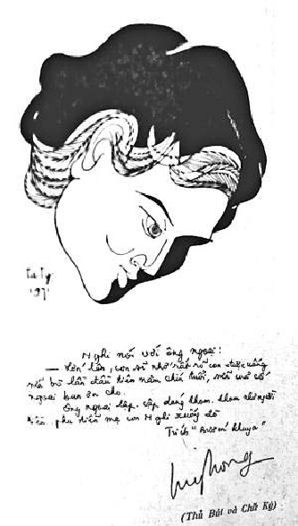

Tên: Nguyễn Thị Tuý Hồng. Bút hiệu: Tuý Hồng. Ngày sinh: 12-10-1938 tại Chí Long, Phong Điền, Thừa Thiên. Viết văn từ năm 1962 (viết 1 bài rồi nghỉ 2 năm sau mới viết lại).

.Tác phẩm: Thở dài, nhà xuất bản Đời Mới 1965, Kim Anh tái bản 1966; Vết thương dậy thì, nhà xuất bản Kim Anh 1966; Trong móc mưa hạt huyền, nhà xuất bản Đồng Nai 1969; Tôi nhìn tôi trên vách, nhà xuất bản Đồng Nai 1970; Mùa hạ huyền, Văn Khoa 1971; Những sợi sắc không (Giải nhất Văn chương toàn quốc 1970), nhà xuất bản Khai Trí 1971; Biển điên, nhà xuất bản Văn Khoa 1971 ; Bướm khuya, nhà xuất bản Đồng Nai 1971
Đã cộng tác với: Văn Hữu, Bách Khoa, Lập Trường, Văn, Văn Học, Tin Sách, Nghệ Thuật, Kịch Ảnh, Con Ong, Diều Hâu, Tia Sáng, Độc Lập, Tin Sáng, Thần Phong, Thời Nay, Đời Nay, Khởi Hành, Tiền Tuyến, Vấn Đề…
Tuý Hồng và Những sợi sắc không
… Huế là quê hương tôi, quê hương đang có vô số nhà cửa cần bán rẻ để người Huế vào Sài Gòn tìm một chỗ ở cuối cùng. Tôi đã ở Huế từ trong bụng mẹ đến năm thứ 28 của cuộc đời. Huế mang thai tôi, để ra tôi, cho đến khi tôi đi lạc vào Sài Gòn này. Từ hai năm nay, tôi ở nhà thuê, nói tiếng Bắc, ăn chả giò, ăn bún riêu, canh chua cá dấm, thịt bò viên, mía ghim và có một người yêu…
… Bỏ Huế mà đi lòng tôi nhớ trời, nhớ khoảng thiên nhiên. Huế đẹp từ vũng nước đọng bên đường đến lượng cỏ non Hương Giang, từ cọng rau muống bờ hồ đến cây phượng già xanh lục… Những đêm mùa đông, những con “ệnh oạng” kê mõm khắc khoải kêu than từ những ao rau muống… kêu chi mà khỏ mà trầm thống!…
… Cực lòng quá, Huế ơi! Tôi đi… ở với Huế buồn lắm… vào Sài Gòn hoạ may có một nụ cười, vào Sài Gòn hoạ may có một người yêu!…
(Tôi nhìn tôi trên vách, trang 10-11)
Huế, quê hương của Tuý Hồng đã góp mặt vào văn nghệ với truyện ngắn “Thở dài”, làm bỡ ngỡ nhiều người vì nội dung và lời văn bỏng cháy tình dục. Sự góp mặt đầu tiên cũng là sự đóng góp vĩnh viễn vào khung trời văn học Việt Nam một bông hoa lạ và quý. Cô gái xứ Huế, mặc áo tím, che nghiêng nửa mặt chiếc nón bài thơ, mái tóc huyền bỏ xõa ngang lưng, lê đôi guốc mộc gõ lóc cóc trên nhịp cầu Tràng Tiền mỗi sớm, gõ mỗi chiều trên ván cầu Bạch Hổ, để các thi sĩ làm thơ, nó không nằm trong kích thước Tuý Hồng. Tuý Hồng là một ngọn lửa, là một mũi tên, là lưỡi dao nhọn, là những đột biến giãy giụa, là sự dấn thân không trả giá, là cuộc sống hôm nay không có nguỵ trang bằng môi cười e lệ, bằng dáng dấp thẹn thùng, bằng sự mập mờ, che đậy. Huế, kinh đô nhà Nguyễn với thành quách lâu đài, với lăng tẩm uy nghi, với dòng Hương Giang lững lờ xuôi mái, với núi Ngự Bình phơ phất chim bay, với bốn mùa thay đổi. Tất cả, đã tạo nên Huế một sắc thái đặc biệt, nó trầm lắng ưu tư trong quá khứ và nó vạm vỡ, hùng tráng trong cách mạng.
Tuý Hồng được Huế đùm bọc từ thuở ấu thơ tới năm 28 tuổi. Biết bao nhiêu kỷ niệm giăng mắc đầy ứ tâm hồn. Cái cuộc sống đó, nó không đơn thuần, giản chiết, mà nó đẩy sâu mỗi số phận vào góc tối của suy tư, đồng thời nó bắt con người phải phản kháng hay chấp nhận những gì hiện hữu.
Tuý Hồng nhớ Huế, thương Huế ở giữa Sài Gòn mưa nắng hai mùa với dòng sống ồn ào không biết mỏi mệt. Cái cảnh mơ mộng đi sóng đôi trên con đường Phan Chu Trinh nhìn hoa violette, hay trải hồn theo tiếng hò ngân dài trên mặt nước sông Hương, không thể có ở đây, ở một hoàn cảnh chụp bắt, lừa lọc, phản trắc kể cả những khuôn mặt anh em! Nó làm cho cuộc sống gẫy vụn ra từng khúc. Nó làm bải hoải và chán mỏi đến tận cùng xương tuỷ, nhưng mọi người không thể và không có cách nào rời xa nó cả. Nó là nguồn sống, là huyết mạch. Nó đưa người lên, dìm người xuống. Nó là cuộc chơi đầy hứng thú và nguy hiểm.
Tuý Hồng kinh qua ba tác phẩm nhỏ: Thở dài, Vết thương dậy thì và Trong mưa móc hạt huyền để đi vào những tác phẩm bề thế rộng lớn có tính cách quyết định sự nghiệp văn chương của nhà văn. Tôi nhìn tôi trên vách, tác phẩm dài đầu tay của Tuý Hồng. Trong cuốn sách, tuy nhà văn dùng ngôi thứ nhất, nhưng nguỵ trang dưới tên Khanh để giữ tính cách riêng của nhân vật, sự thực, nó chính là một đoạn đời khi giã từ tuổi con gái của tác giả, cũng như Colette viết về đời mình trong nhiều cuốn sách, với các nhân vật mang tên Claudine hay Renée chẳng hạn. Vả lại, cái đó không quan hệ. Điều quan hệ là giá trị thực thể của tác phẩm đối với độc giả cùng những dữ kiện mà nội dung cuốn sách chuyên chở, có mang lại một kết quả nào về ý thức đời sống có mặt hay không?
Nội dung Tôi nhìn tôi trên vách, viết về đời sống của Khanh, cô gái xứ Huế, vào Sài Gòn rồi lấy Nghiễm, văn sĩ người Bắc. Trước khi lấy chồng, Khanh làm nghề cào thuốc ở các phòng mạch. Nghiễm anh trai gì cẩn thận, không muốn Khanh hành nghề này, sau khi thành hôn, vì một lần vô tình Nghiễm đã chứng kiến sự chụp bắt, lầm mò của y công vào thân thể cô gái có nhiệm vụ chào hàng. Nghiễm sống độc thân đến năm gần 40 tuổi mới lấy vợ. Khanh ba mươi mới lấy chồng. Hai cái già khú đế lấy nhau vì tình yêu để rồi chịu đựng nhau trong nếp sống thường nhật. Tiền cưới, một phần, do bạn bè của Nghiễm giúp, cộng thêm số tiền Nghiễm được bạc. Cưới xong, Nghiễm và Khanh chung sống ở một cao ốc giữa Sài Gòn. Tuy đã lấy vợ, nhưng Nghiễm vẫn uống rượu và rong chơi cùng bạn hữu. Khanh không quen lối sống nơi đây, nên bảo Nghiễm sang lại phòng về nhà bố mẹ ở. Bi kịch nội tâm đã đẩy Khanh vào một vùng trời oán hận với kỷ niệm, vì hiện tại có Nghiễm, có bố mẹ, các em gái và bạn hữu. Tất cả những gì u uẩn nhất, chua cay nhất đều được Tuý Hồng viết với vò xé, đôi khi tàn nhẫn. hình ảnh Phi híp-pi, Sanh, Ninh và chị Sương, Bích Vân, Bích Khuê v.v… chỉ là những khuôn mặt phụ được tác giả tạo ra để sử dụng vớn ẩn ý nào đó, nhằm gây nên sự tình, đẩy nội dung vào môi trường thuận lợi của kỹ thuật dựng truyện. Nhưng cuối cùng, tác giả vẫn dành cho người đọc sự thoải mái nhẹ nhàng vì chẳng có gì đáng tiếc. Hạnh phúc vẫn nằm trong tay với chồng con nguyên vẹn.
Những mơ mộng thời con gái mất dần theo thực tế. Lấy chồng đâu phải đùa giỡn và không cuộc sống nào toàn bích. Những đuổi bắt của thời con gái, chỉ còn là ảo ảnh do tiềm thức cấu tạo nhằm đánh lừa thực tại. Khi yêu nhau, cái gì cũng tốt, cái gì cũng đẹp, yêu từ giọng nói yêu đi,
Em nói tiếng Huế cho anh nghe đi. Anh thích nghe tiếng Huế, tiếng Huế mà chửi nghe cũng hay!…
Nhưng câu nói chỉ để lừa nhau đó thôi, cuộc đời làm cho sự thực lần lần hiện ra từng mũi nhọn. Những mũi nhọn của đời sống xuyên qua suy tư, đâm lút vào trí não làm tê liệt thần kinh, làm rã rời hy vọng. Sự chờ đợi và mong mỏi không còn cho bồn chồn đứt nuối, nó trở thành nỗi hờn ghen, oán hận và ý nghĩ phũ phàng trong mỗi tưởng tiếc! Tình yêu có đấy, cuộc đời có đấy, ân tình có đấy, nhưng nó là cái gì vừa tung cao lại giật xuống, vừa cho đi lại lấy về, vừa xây dựng lại phá đi, vừa thương yêu lại phụ rẫy. Nó là nỗi khốn khó của thực tế đối chiếu với dự tưởng. Nó không tròn đầy vòng tay mong mỏi. Nó thiếu hụt. Nó chơi vơi như kẻ không biết bơi bị cuốn vào trận đắm tàu. Tuý Hồng là ngọn lửa hoả diệm sơn ngất ngất, chứa chấp tận đáy sâu một khối lượng nhiệt khổng lồ, mỗi lần chuyển động là mỗi lần gieo đớn đau, đổ vỡ và chất phún thạch kia chảy lan tràn làm chết sững cả một vùng cỏ cây vô tội. Tuý Hồng viết như ném vào cuộc đời những phũ phàng, như tiếng thét giận dữ để phản kháng lại sự trói buộc, cái bất toàn của luật lệ xã hội với thân phận đàn bà. Bởi vậy, ngôn ngữ văn chương của Tuý Hồng nghe sượng sần, chát chúa.
… Em tôi là văn sĩ. Bước chân vào làng văn là đi đời con gái. Bây giờ thử hỏi một nữ sĩ: Cô đã ngủ với đàn ông lần nào chưa? Thì phải hết sức vô giáo dục, hết sức trơ trẽn, hết sức giả tạo, ngổ ngáo, trân tráo mới có câu trả lời: Tôi chưa hề ngủ với đàn ông lần nào!…
(Tôi nhìn tôi trên vách, trang 26)
A, nữ sĩ! A, văn nghệ! Nếu vậy làm nữ sĩ cũng cực nhọc lắm, đâu có dễ dàng. Cái mảnh hồng nhan với đường con rõ rệt, gồm những tế bào được cấu tạo bởi: muối khoáng, nước, vôi, sắt, acit v.v… có phải điều quan trọng, có phải một gìn giữ thiêng liêng cho mỗi nhan sắc? Hay nó chỉ được đánh giá bằng đam mê nhục thể, bằng ve vuốt môi hôn, bằng thể tích của cặp đùi, của vùng đồi cỏ êm mướt, với chiếc tử cung và hai buồng trứng, như Tuý Hồng quan niệm? Không, nó đâu như vậy! Văn nghệ nó là đời sống ở trên đời sống. Nó cung cấp những dữ kiện để tạo nên đời sống, nó chấp nhận hay phản kháng những gì mà đời sống đẩy tới. Nó làm cho mỗi số phận vượt thoát thấp hèn, ti tiện. Nó là môti cười dịu ngọt, nó là giọt đắng tê lưỡi, nó là dòng lệ không bao giờ khô, nó là câu khóc không thành tiếng. Cái tâm hồn nửa đực, nửa cái, cứ thích xông xáo ở ngoài, cứ đâm sầm vào xã hội như trâu bạc mất mùa, Tuý Hồng dùng để xác định cương vị của nữ sĩ hôm nay, chẳng qua chỉ để tỏ bày thái độ, để khẳng định lập trường trước xã hội mà thôi. Chính thức, cuộc đời cũng như cuộc tình, đối với nữ sĩ vẫn long lanh màu hổ phách trong đáy ly liên hoan, sóng sánh men rượu ân nghĩa, vẫn ấm ngọt, vẫn mịn màng như hột bánh nhân duyên.
Tuý Hồng viết sắc và nhọn. Sắc như lưỡi dao mới mài, nhọn như mũi dùi mới giũa. Những dữ kiện vừa cay đắng, vừa mỉa mai, vừa dâm đãng, vừa cao thượng, vừa yêu thương, vừa ghét bỏ, vừa buồn vừa vui làm người đọc như bị bủa vây trong một không khí mờ ảo, mù mịt hơi cay, để rồi khóc, để rồi cười, để rồi nuối tiếc!…
Lấy chồng muộn, Khanh thèm có con nâng niu, phòng mai hậu về già đỡ lo, vì thế, đêm tân hôn đối với nàng là đêm thư hùng lồng lộn, đêm trống mái dập vùi, nàng khát khao mong mỏi sau đêm đó, đường kinh sẽ tắt và bụng tròn vo bởi có đèo thêm mầm sống. Nhưng sáu tháng trôi qua vẫn như tháo chỉ, đan len hoài công uổng sức! Cũng như Khánh hy vọng, lấy vợ rồi, Nghiễm sẽ bỏ mọi thói hư tật xấu như uống rượu, rong chơi cả đêm cùng bạn hữu và với các “cô cháu” kêu bằng “chú” đáng nghi ngờ! Nhưng không được. Nghiễm, nhà văn, nghĩa là ngoài bổn phận làm chồng. Nghiễm vẫn còn có đời sống riêng, một đời sống phóng túng của loài ngựa rừng không thích đóng yên, mắc hàm thiếc, che mắt một chiều. Từng đêm trên cao ốc, khắc khoải mong chồng đi chơi khuya về, làm Khanh chán mỏi. Hơn nữa, cái chung cư đó còn gây cho nàng những ấn tượng hãi hùng, ghê tởm. Không khí hắc ám vây quanh toàn vũ nữ ngày đêm lướt thượt lượn lờ. Ái tình thì đánh ghen, giành giựt với những khuôn mặt tiên nữ lúc hoàng hôn và dạ xoa mỗi bình minh thức giấc. Nó không thích hợp với Khanh, cô gái Huế có nếp sống trầm tĩnh, kín đáo, dù trong lòng có nổi loạn yêu thương từng cơn vật vã!…
Sau cùng, Nghiễm đã thua, chiều theo ý Khanh dọn nhà về ở chung với gia đình bên vợ. Trâm và Thảo, hai cô em lớn của Khanh. Trâm viết văn, làm nữ sĩ đó! Nghiễm như lạc vào thế giới lạ, cảm thấy cô đơn. Xung quanh được bao phủ bởi một nếp sống khác, khác hẳn từ lời nói, khác từ miếng ăn, khác từ cử động. Nghiễm, trước mắt mỗi cô em vợ là con người cẩn thận vô lối đến ti tiện, mở tủ lạnh cũng khó chịu, rửa chén bát dối cũng không ưng ý, để từ đấy đi vào mâu thuẫn. Còn Khanh về nhà bố mẹ, cũng chẳng sung sướng gì, nàng trở thành cái bung xung, một bên chồng, một bên bố mẹ và các em, chao ôi! Các cô em sao ác ôn làm vậy? Thảo mỉa mai bảo Khanh: Hầu chồng như hầu chúa, cha thì đau lên đau xuống chẳng pha cho cốc sữa. Trâm chua chát: Cá voi luỵ rồi, nước biển tha hồ ra sức chào xáo xung động. Còn Nghiễm lại nhăn nhó: Sao Thảo nó chửi vào mặt anh vậy? Khanh là ung nhọt, là đau đớn có đấy. Phải chứng kiến và làm nhân chứng bất đắc dĩ cho hạnh phúc khốn khó của riêng mình và chung gia đình:
… Tôi vùng chạy xuống thang gỗ vào phòng đắp mền nằm co rút. Nước mắt hình như nóng hơn khi tôi khép hai mi lại. Ướt đẫm cơn khóc câm, tôi hình dung ra những chuyện tiếp diễn từ buổi sáng đầu tiên tôi về lại nhà cha mẹ: ngày của Nghiễm không phải là một khối thời gian để trắng mà tràn đầy công việc, chàng còn bận chuyện liên miên nên giấc ngủ của chàng bao giờ cũng bắt đầu từ nửa đêm đến tám giờ sáng và từ hai giờ chiều mới được ngủ lại giấc trưa. Cái tủ lạnh để trong phòng hai vợ chồng. Trong đó là bia, là trái cây, là nước lọc, là fromage, jambon, pâté, giấc ngủ của chàng bị dựng dậy từ sáu giờ sáng vì tiếng mở tủ lạnh lách cách của các em tôi vào lấy nước lọc. Chàng nằm trên giường theo dõi bước đi, bước chạy của từng đứa, cánh tay từng đứa dang ra mở tủ đóng tủ. Đến ngày thứ sáu cái tủ lạnh mở không ra đóng không vào. Nghiễm bảo:
“Những đứa em gái của cô sao nhiều đàn ông tính, đãng trí, buông thả, dễ dãi, cẩu thả. Cô phải bảo với chúng là đồ vật cũng có tri giác, đồ vật cũng biết đau.”
Hai mi mắt tôi bắt đầu đỏ sửa soạn những giọt lệ:
“Vâng, vâng, tôi sẽ không cho chúng thọc tay vào tủ lạnh này nữa.”
(Tôi nhìn tôi trên vách, trang 67)
Chính thức, đồ vật không biết đau, người bỏ tiền ra mua chúng về thì đau thật! Nghiễm, sống độc thân quá lâu, hơn nữa, từ nhỏ đã phải tự mình lo cho mình, gây dựng cho mình, do chính mồ hôi và nước mắt của mình mà có chúng, nên sự giữ gìn là cần thiết đối với Nghiễm. Còn Khanh, vì tự ái nên nàng khổ, Khanh cũng không quên cám ơn Nghiễm, vì lấy chàng nên nàng mới được ăn nhiều miếng ngon, mặc nhiều đồ tốt, nhưng Khanh muốn rằng, không phải vì thế mà Nghiễm có quyền khinh nàng và gia đình mình. Bài học làm vợ đã cho Khanh biết thế nào là nhẫn nhục. Nhưng trời lại phú cho nàng cái tính tự ái, ưa suy nghĩ nên nàng khổ. Cái khổ đó, nàng muốn vứt đi như vứt bỏ món đồ phế thải hoặc trả thù cho bõ ghét, cho bõ tức, tuy vẫn yêu chồng, thương bố mẹ, các em. Nghiễm, đôi khi dưới mắt nàng, cũng chẳng tốt đẹp gì, bê tha rượu chè, mê rượu hơn mê vợ, và có lần Nghiễm cho Khanh biết: trước chàng còn hút thuốc phiện nữa kia, bây giờ tu tỉnh lại rồi đó! Bỏ tám phần mười rồi đó, nhà văn mà! Có lúc Khanh giận quá đã phải nhờ Trâm viết thành văn hộ mình một dòng: Hạnh phúc đôi khi là một tên cướp đuổi nàng chạy như chuột. Nhưng đó chỉ do sự mất bình tĩnh trong chốc lát, vì những gốc râu của Nghiễm day trên môi Khanh vẫn làm nàng tê tái, khoái cảm!…
Cái nếp sống chồng Bắc, vợ Huế, còn làm khổ mỗi người về miếng ăn, thức uống. Nghiễm thích bún riêu, chả giò, thịt bò xào cần v.v… nhưng gia đình Khanh lại chỉ ưa cá nục kho, mắm ruốc! Lấy chồng nhà văn lại còn ham đeo hột xoàn, tức là chọn nhầm cửa. Nhưng đàn bà lạ lắm, hay tự ái vặt, thấy bạn có hột xoàn, tự nhiên trong lòng nảy sinh mơ ước cho được bằng người. Bích Khuê, một goá phụ trẻ, bạn của Khanh buôn hột xoàn, hay đánh bài với mấy ông tướng thất nghiệp qua vài cuộc đảo chính, chỉnh lý. Sự có mặt của Bích Khuê như lời khích động, lời mời chào vượt thoát. Nghiễm chỉ yêu vợ chứ không yêu gia đình nhà vợ, nên chàng thường mua lén thức ăn ngon chờ cả nhà đi ngủ, gọi vợ dậy ăn vụng. Sự ước mong một đứa con của Khanh rồi cũng đến. Nó hành nàng với một cơn đau chết giấc. Trong cơn mê vì độ nóng, Khanh nhìn thấy viên kim cương Culiman của hoàng gia Anh, và các trò chơi tình ái qua ba hồi bảy hiệp của đời con gái thăng trầm.
Đứa con Khanh mong, nó đã ra đời: mắt lớn, tai to, tóc rậm, xồm xoàm tiền sử. Tên nó: Khanh Hiền. Mắt nó đen như satin để sau này lớn lên hớp hồn đàn ông như mọi cô gái Huế. Cuộc đời Nghiễm, Khanh, thêm đứa con vẫn cứ nằm chình ình ở căn phòng khách được ông bố vợ xây tường vội vàng ngăn đôi cho cách biệt. Nghiễm vẫn vậy, uống rượu đều và đi Đêm Màu Hồng. Còn không khí vẫn bị quá khứ đi về giăng mắc. Những cuộc tình không có chiều dài, nhưng cũng đủ làm nên kỷ niệm. Dòng sông Hương nước chảy lững lờ xanh biếc, óng ánh ôm nhịp chèo périssoire dồn dập. Ôi! Dòng nước cứ mỗi năm một lần bị đại dương lấp hiếp lại ghi dấu mặn nồng làm cả thành phố thiếu nước uống. Nào lăng tẩm, nào cửa biển Thuận An, nào đèo Vọng Cảnh, nào chùa Thiên Mụ và một hôm nàng thỏ thẻ vào tai Nghiễm: Anh Nghiễm ạ! Cá voi đực si tình lắm. Ngày xưa có một ông mê em như cá voi đực, mê kỳ lạ, mê đến mọc mộng ra. Nghiễm: Ừ!… Nghiễm biết rõ quá khứ của Khanh nhưng đã thuộc về dĩ vãng. Chàng chỉ cần sự trong trắng của Khanh từ ngày cưới trở đi thôi. Nhưng, làm sao Nghiễm có thể kiềm chế Khanh không được suy nghĩ, không được đến thăm bạn bè? Bích Khuê đó và Sanh chẳng hạn:
… Tôi đứng lên chào về. Sanh nhìn tôi từ tóc tới chân, mắt chàng êm ái mát như lụa và ngọt sắt như quýt Hương Cần. Tôi sức nhớ một câu văn tôi đã ghi vào bìa cuốn vở giảng văn năm đệ nhị: “Đừng nhìn nhau lâu, sợ rồi thương mến nhau, chỉ cần quen biết thôi, tình đừng nên tìm sâu.” Hồi đó Bích Khuê nói: “Con Khanh hắn yêu anh Sanh như sanh với sứa!…”
(Tôi nhìn tôi trên vách, trang 119)
Rồi con đường Phan Chu Trinh nằm bên dòng sông An Cựu ghi dấu kỷ niệm tuổi trẻ. Hôm nay Sanh còn đó, Khanh còn đó, mà xứ Huế thật xa vời. Hình ảnh con Khanh thằng Sanh điên điên tàng tàng đã bị thời gian khoả lấp vào đổi thay, nay chợt trong tiềm thức le lói ánh lên màu hạ cũ. Chuyện đến vay tiền Bích Khuê để mua máy rang ngô, biết đâu chẳng phải cuộc viếng thăm để giải toả kiềm chế:
“Bắt được cô bỏ nhà đi chơi đấy nhé, hết chối, hết cãi.”
“Phải rồi, tôi đi đánh tứ sắc đấy.”
“Này, liều vừa vừa nhé!”
“Anh sao cứ ra tay lớn vào những việc nhỏ.”
“Trước khi đi tôi đã buộc cô ở nhà trông con.”
“Em đi có việc cần.”
“Tôi đã bảo ở nhà, là ở nhà. Cấm không cãi.”
“Ai biết anh khó vậy. Nếu biết anh khó… khó… như vậy… biết vậy thà lấy chồng Huế cho sướng…”
…
… Cơn khóc khởi đầu bằng những cái chớp mắt nhỏ, nỗi buồn khởi đầu bằng tiếng thở dài ẩm ướt, cơn điên khởi đầu bằng những sợi thần kinh hư, tôi thảng thốt nghĩ rằng tôi đang ở trong một cái ống, mở thoáng hai đầu trông ra cuối trời mơ ước, cuối trời kỷ niệm. Tôi trông ra và tôi thúc thủ bó tay.
Thảo rướm giọng:
“Lấy chồng đôi khi là một sự lỡ tay.” Trâm ngừng viết ngửng đầu lên khôi hài:
“Lấy chồng là tự sát…"
(Tôi nhìn tôi trên vách, trang 124-127)
Sự ngỡ ngàng tình cảm làm Khanh thấy nhức buốt trong mỗi ngày giờ, sống trong kích thước gia đình, nàng tìm phương kinh qua, bằng cách với Nghiễm cho mình theo học Văn khoa. Khuôn viên đại học đẩy Khanh gặp Phi híp pi. Khuôn mặt này, tác giả chỉ dùng như một ám ảnh, một buồn phiền, mà nhà văn cần giải toả ẩn ức trong đáy thẳm tâm linh. Cái cuộc sống do Khanh chủ động hồi con gái không còn nữa. Nó chỉ như một sợi tơ đứt mỏng manh bay phất phơ theo chiều gió. Phi như con dã thú, như một tội ác, như sự ghê tởm, như viết sâu Quảng làm lở lói ý nghĩ của nàng. Nó vuốt má Khanh, cầm tay Khanh và xấu hổ chưa, nó còn đòi chết trên bụng nàng. Ôi! Cái bụng đam mê có vùng mơ ước! Nỗi đớn đau chợt tới. Khanh mong vượt thoát ít phút cái lưới của Nghiễm giăng qua mau, quá dầy lại bị cái lưới cuộc đời ô trọc bao phủ. Phi trân tráo lại nhà thăm Khanh. Cái mái tóc thời tiền sử của Phi, làm Khanh chợt nghĩ đến thời kỳ ăn lông ở lỗ, chưa lửa, chưa khói, chưa sắt, chưa vải che thân…
Sự thực, tác giả đã nguyền rủa xã hội Việt Nam trong chiến tranh đau khổ, còn dung dưỡng những điều quái gở qua vóc dáng Phi đó! Câu chuyện Phi chưa xong, đến chuyện Ninh, chàng trai xứ Huế quen nhau ngày xửa ngày xưa. Mỗi khi Khanh gặp lại con trai Huế, như gặp đời sống của mình nên bao giờ nàng cũng vồn vã quấn quít. Vì thế, nếu có ý nghĩ u ám trong đầu, đó cũng chẳng phải điều lạ. Các cô em trách Khanh về vấn đề này tuy chẳng thích gì Nghiễm, anh con trai Bắc kỳ khó tính. Tuy làm gì cứ làm, nghĩ gì cứ nghĩ, Khanh vẫn thương chồng lắm,
… Thương chồng, thương luôn những ly rượu của chồng. Thương chồng, thương cả chiếc miệng nói nhanh. Thương chồng, thương cả tật rung đùi, thương từ ngón chân cái, ngón chân út đến sợi tóc sớm bạc trên đỉnh đầu, thương từ đầu gối thương lên đôi môi lười biếng tạo những chiếc hôn, đôi môi chỉ biết hôn khi có chuyện cần…
(Tôi nhìn tôi trên vách, trang 241)
Nhưng đôi khi quá giận, Khanh nói lên những lời chua hơn giấm, cay quá ớt, ngay vào mặt Nghiễm:
"Giết tôi đi, tôi không chấp nhận thứ chồng trâu ngựa đó… Những người bạn cũ của tôi vẫn có một giá trị, một sức nặng cụ thể cho tôi mến phục. Họ khốn khổ, họ trong sạch, họ thanh thản, họ uống nước vối chớ không biết uống rượu… Có lẽ họ tồi hơn anh ở những chỗ đó: họ thức khuya để học bài thi chứ họ không thức khuya để ngồi ngắm ca sĩ phòng trà…"
(Tôi nhìn tôi trên vách, trang 260)
Lời nói như những mũi kim châm, như từng chiếc lưỡi lê đâm phập vào da thịt rồi để nguyên đó. Nó dìm xuống vực sâu bao nhiêu ân nghĩa. Nó cắt xén từng sợi tình vấn vít. Nó thấm. Nó đau. May quá còn chị Sương, một người đàn bà biết cư xử theo lẽ phải, tuy cũng bắt nạt chồng “một cây”. Chị Sương nói: Có ba thứ danh dự con Khanh không được chạm đến: danh dự của chồng, danh dự của cha mẹ, danh dự của tụi em mình chưa có chồng; và chị nói với Thảo, nếu thằng Nghiễm có lên đây (trên lầu) gây lộn với con Khanh, mình về phe thằng Nghiễm.
Vì uống rượu và làm việc quá nhiều nên Nghiễm khạc ra máu. Khanh lo lắng chạy đến nhà Bích Khuê xin đơn thuốc gia truyền, gặp Sanh. Sanh trách Khanh, tự nhiên nhảy vào Sài Gòn lấy Nghiễm làm bao nhiêu thằng hổng cẳng, rồi hắn buông một câu:
"Tại sao Khanh lại có thể đi kết hôn với Nghiễm nhỉ. Khanh có nhận thấy là Nghiễm không đáng xách dép cho Khanh không?"
(Tôi nhìn tôi trên vách, trang 273)
Cái anh con trai xứ Huế này thật nhảm. Đã thua cuộc còn làm tàng. Khanh giận, nhưng câu trả lời của nàng hơi yếu, tự an ủi rằng, không chấp làm gì thằng con nít điên.
Nghiễm ngã người vào cột đèn sau một bữa chả cá mời vợ, trong lúc chờ taxi về. Bệnh Nghiễm nặng thực, tưởng chết ngay, Khanh đưa chồng vào nhà thương Chợ Rẫy một đêm, hôm sau vào Grall, Khanh đang mang bầu đứa con thứ hai. Việc nuôi bệnh là điều khổ cực. Nghiễm bị chai gan vì rượu. Nghiễm phải kiêng thức ăn đặc, nên Khanh ăn phần cơm của chàng, trong nhà thương:
Tôi cười buồn miễn cưỡng nhấc chiếc nĩa xúc vài cuống “nui” cho vào miệng. Qua ba lần nuốt, tôi bỗng cảm thấy đĩa “nui” ngon, tôi gắp miếng sườn sang xé ăn hết cả, ăn hết đĩa xúp hết khúc bánh mì và sau cùng quả chuối dài. Tôi quay nhìn Nghiễm ngủ, tôi phát ngán tôi. Chồng đau nặng mình đớp đủ thứ một cách khoái khẩu như thế này…
(Tôi nhìn tôi trên vách, trang 278-279)
Nghiễm đau nặng lắm, tự nhiên lại rung đùi, đấy là một điềm lành, là dấu hiệu tha thiết nhất của cuộc sống trước mặt Khanh lúc đó. Thời gian làm Nghiễm bình phục, nhưng Nghiễm không về nhà, nằm dưỡng bệnh tại một cao ốc do người bạn tốt cho mượn. Mỗi chiều Khanh đưa cơm và ngủ lại đó. Thời gian này có “cháu” Bích Vân lại thăm, Khanh ghen. Đi từ cơn ghen, Khanh quan niệm bọn đàn ông văn nghệ người nào cũng chia cuộc đời mình làm hai: một cho vợ con, một cho người tình và mỗi người đều có năm bảy lá gan để sẵn sàng đem cho gái. Còn Khanh, vô tình gặp Ninh, gã nói dối Bích Khuê cần gặp nàng. Khanh theo Ninh về nhà. Ai ngờ, có Phi híp-pi chờ sẵn, Bích Khuê không thấy. Hai đứa nó hành hạ nàng, đánh đập nàng, may có Sanh đến cứu. Hình ảnh Sanh lúc nào cũng lởn vởn bên cạnh đời Khanh. Nó không có đấy mà hiện diện trong mỗi góc sống của đời nàng. Nó là cõi trời đã mất, một phiến mây đã qua, một vùng tuổi trẻ nguyên vẹn với giao ước vượt khỏi vòng tay. Quá khứ nhức buốt làm Khanh ngất ngư trong vũng lầy tâm tưởng. Để cứu vãn kinh tế gia đình vì Nghiễm đau, Khanh phải đi dạy học, nhưng nàng cũng không quên tìm vui cho riêng mình. Nàng theo Bích Khuê đi phòng trà, phấn son, giày dép, tóc tai hợp thời trang, ngồi xem thiên hạ đánh bạc và đi tắm biển với người con trai lạ mặt, tên Thể. Hắn đã ôm đại nàng giữa sóng biển dào dạt cuốn xô hai thân xác!… Rồi cũng vì Bích Khuê mà nàng phải nổi nóng cấu xé Phụng vì bị nghi oan ăn cắp chiếc nhẫn kim cương trong lúc Phụng tắm. Thể có mặt như một bãi phân!
Tất cả những việc trên, tác giả chỉ dùng nhằm đưa nội dung vào “cao độ kỹ thuật”, nhưng đồng thời cũng để bày tỏ thái độ sống và sự phản tỉnh sau những chuỗi dài vật vã đam mê, buông thả tâm hồn, thân xác! Ngay cả vấn đề gia đình, Nghiễm còn đó, ba đứa nhỏ còn đó, bố mẹ và các cô em còn đó, ngày tháng còn đó, trước mặt. Nhưng hạnh phúc vợ chồng không thể hoà hợp khi mọi chuyện riêng tư còn được dò xét và phê bình bởi người ngoại cuộc, dù người đó là bố mẹ, chị em. Hạnh phúc cần được che đậy dưới một dung tích nào đó, kín đáo và riêng biệt. Nó nhỏ bằng bàn tay hay to bằng cái đình, miễn nó thuộc về mình. Chỉ có mình và nó. Sau cùng, nhờ trời Nghiễm và Khanh đã có một dung tích để giải toả mọi ám ảnh, phiền não. Tôi nhìn tôi trên vách hay Tôi nhìn tôi trong hồn, với hình ảnh quá khứ, hiện tại và còn đó, nỗi cô đơn nguyên vẹn. Những hình bóng nào đấy in chập chùng trên tấm-vách-đời-tôi như những vết thương không bao giờ kín miệng, ngày và đêm chỉ làm nhức nhối tâm tư…
Trong hơn bốn trăm trang sách, Tuý Hồng đã vẽ nên bao nhiêu hoạt cảnh vui buồn, với nhiều cay đắng, nhớ thương và giận dỗi. Tuý Hồng viết như bứt ra khỏi hồi những vướng vít, như cầm lưỡi dao khứa vào da thịt mình, để nhìn từng giọt máu đỏ hồng chảy nhễ nhại với tiếng cười tự ái. Những vết thương tình ái dù đã thành sẹo trong tâm hồn, nhưng vẫn là ngứa ngáy khó chịu mỗi lần nghĩ tới. Cuộc sống dù được trải rộng ra hay thu hẹp lại, lúc nào Tuý Hồng cũng tự mình bày vẽ, điểm trang cho mình nét đặc biệt, thật đặc biệt, thật riêng rẽ giữa những nhàm chán đến buồn nôn. Nói đến thân xác, không còn là nói điều cấm kỵ và những ngón tay ngọ nguậy ái tình cũng chẳng phải lời nói dâm ô, hoặc điều sỉ nhục. Đối với Tuý Hồng, cái khung trời tình ái mà tuổi trẻ tôn thờ, không đi ra ngoài thú vui nhục thể. Chính nó, mới là tình yêu chân thật. Hỡi tên gác rừng của văn hào D.H. Lawrence, mi đã bất tử cùng với người đã tạo ra mi uổng thay, mi đâu có biết!
Từ Tôi nhìn tôi trên vách Tuý Hồng đã đi vào Những sợi sắc không với sự đắm chìm của bao thân phận quay cuồng, vật vã trong lịch sử và cách mạng, ở đấy tình yêu hiện diện như sự thách đố với đạo đức và định mệnh.
Huế nên thơ và trầm tĩnh? Huế e lệ và kín đáo? Không, Huế trong năm 1963 là sôi sục căm thù, Huế là mồi lửa thứ nhất, là tiếng gào thứ nhất, là giọt máu thứ nhất, là cam đảm thứ nhất, là quyết tâm thứ nhất trong phong trào nổi dậy để xô đổ một chế độ đã 9 năm làm chủ miền Nam nước Việt, khi nó không còn làm họ hài lòng. Các thanh niên trí thức đã cùng Phật giáo và toàn dân thành phố Huế nhất tề đứng lên tranh đấu. Một số trí thức bị bắt, bị tra tấn và bị truy nã. Tiếng súng cách mạng 1/11/1963 thành công. Họ reo hò vui sướng. Nhưng sau đó, những người cùng chung lưng đấu cật hôm trước lại không cùng nhau nhìn về một hướng. Một ngã ba sông thành hình. Từ đó là gãy vụn, chia lìa và tình yêu cũng chỉ được đánh giá qua lý tưởng cách mạng, hoặc bằng sự chụp bứt nhục thể nếu có hoàn cảnh.
Những khuôn mặt chính: Trương, Lê Hùng, Sinh, Cỏ May, Trầm, quấn chặt lấy nhau trong không gian xứ Huế, và rất nhiều nhân vật phụ chạy xung quanh họ như quân đèn cù. Họ yêu nhau, làm khổ nhau, phản bội nhau, nhớ thương nhau, qua bao nhiêu trạng huống giày vò, qua bao nhiêu bước đi thời đại. Họ tựa vào cánh tay cách mạng để tạo một lý tưởng. Họ tựa vào tình yêu đều dìm họ xuống đáy vực của nghi ngờ, phản bội, ích kỷ, giả trá và lợi dụng. Bi kịch đối với mỗi số phận như những trang đời đen tối, như cơn giông gió thổi từ một vùng trời phẫn nộ, như một hang sâu chập chờn khua động màu xanh nhợt nhạt của những bàn tay giơ lên cầu cứu trong nỗi thất vọng!…
Tuý Hồng dàn trải cuộc sống trong một kích thước vừa đủ, ở đó tác giả đã góp mặt, đã say mê, và sống thực cái đời sống con gái từng tham dụ vào trò chơi cách mạng. Tác phẩm Những sợi sắc không mở đầu bằng 21 kẻ trí thức buộc thành phần sinh viên, giáo sư, bác sĩ trong đó có 2 cô gái: Cỏ May và Trầm. Trong những ngày bị giam, một mối tình nhen nhúm giữa Cỏ May và Trương, giáo sư. Tuy bị mất tự do nhưng 21 “sách” vẫn nô giỡn, yêu đời vì họ tin rằng sự kìm hãm này chỉ tạm thời. Muỗi cứ đốt, rệp cứ cắn, họ cứ ngâm thơ Đường luật và đánh cờ tướng. Họ nói giỡn với lời lẽ như vỗ vào mặt nhau mà không sợ mất lòng:
"Bọn này ăn cơm nguội… đói đàn bà quá nên thấy cô Trầm đẹp vội tán chơi… ồ ồ nếu cô Trầm không ưng ý thì bọn này quay sang cô Cỏ May. Ối chà… đúng là một cuộc tán gái nảy lửa, cuộc tán gái sấm sét qua cơn giông là hết, là dứt tuyệt và mãn tù ra thì ai đi đường nấy. Ờ ờ không biết khi được thả rồi còn có tán gái được nữa không? E rằng thiên tài bị rỉ sét ăn mòn đi rồi!… – Thôi đi cha… Khỉ nào lại có thứ khỉ không biết trèo…"
Cỏ May, cô gái vì lý tưởng mà tranh đấu, còn Trầm, viết văn, có mặt cho biết mùi đời vậy thôi. Trầm, cô gái phiêu lãng, việc đời đối với nàng cái gì cũng là nhỏ kể cả tình yêu.
Qua một đêm cách mạng, mọi người được trả tự do với sự hoan hô nhiệt liệt của dân chúng. Những buổi liên hoan được tổ chức liên tiếp. Những người ở tù hôm trước bây giờ được coi như có thành tích cách mạng. Họ hội thảo, họ ăn uống, họ cười nói, họ coi cuộc đời và sự thành công hôm nay một phần lớn do họ.
Mối tình của Trương và Cỏ May cũng lớn vui theo cách mạng. Trong khi đó Trầm vẫn cô đơn, sống theo ý mình, theo cuộc đời đã chọn lựa: nghề viết văn với tự do tuyệt đối. Trương, giáo sư đại học gia nhập phong trào chống đối chính quyền lúc đó, vì cảm thấy có bất công trong cách đối xử với Phật giáo và độc tài trong vấn đề cai trị, nhưng một khi nhiệm vụ đã thi hành xong. Trương muốn trở lại cương vị cũ. Từ Pháp về, Trương có mang theo vợ đầm tên Laura và một đứa con. Người vợ không hợp thuỷ thổ nên đã tự ý mang con trở lại Pháp. Trương lo thủ tục ly dị theo điều kiện của Laura và bắt đầu yêu Cỏ May. Cỏ May, cô gái Huế lạ lùng vừa yêu tình nhân, vừa yêu lý tưởng, cả hai thứ, nàng muốn phải cao đẹp ngang nhau. Vì lý do nào đó cần chọn lựa, nàng sẽ nghiêng về lý tưởng. Tình yêu giữa Trương và Cỏ May đã đi đến lễ hỏi, tuy Cỏ May khổ sở về bài bố cáo của Trương đăng báo ly dị vợ.
Cách mạng đã thành công, các cuộc hội thảo được tổ chức luôn luôn để gìn giữ khí thế đấu tranh vì:
Sau cách mạng không phải là một giấc ngủ vùi. Người làm nó không ăn không ngồi rồi, không nhởn nhơ bay bướm. Chúng ta có hai quả đấm bằng thép để nhiếc bốc vào bao cát phong kiến, có chiếc lưỡi dài để nhiếc móc vào những phần tử sâu mọt tai hại, bọn mật vụ cần lao phải ngã ngục. Đó là luật thiên nhiên, luật đào thải xã hội. Như cây phải trút lá như rắn phải lột xác…
(Những sợi sắc không, trang 18)
Những người trẻ tuổi đi vào cuộc sống như đi vào cuộc sinh sát, như đi vào căm thù ngàn kiếp! Họ phải phá hết, phải đạp đổ hết những gì họ không ưng. Họ bắt cuộc sống phải theo mình, mọi người phải theo mình, trong khi chính họ không cần theo ai cả! Ý thức cách mạng trong họ là cái gì vừa kiêu căng vừa tàn bạo, một chiều. Chẳng biết có phải thứ độc tài mới chăng? Trương không đồng ý về đường lối đấu tranh đó, chàng bỏ về, bác sĩ Nghị bỏ về, nhưng Cỏ May ở lại. Cỏ May nhìn cách mạng như nhìn vào lý tưởng tuyệt đối. Tình yêu giữa Trương và nàng chỉ có thể nối liền bằng sợi dây cách mạng. Nếu Trương không thích đứng chung chiến tuyến với anh em nữa, chắc chắn nàng sẽ hy sinh tình yêu! Cỏ May càng tức giận khi thấy khuôn mặt nham nhở của Phiến và Trầm, những khuôn mặt không thể phân định rõ ràng lập trường: trông ngoài thì như ngỗng, nhưng trong chát ngầm như chuối xanh, như sung sống!
Buổi họp tan, Trầm về nhà Cỏ May ăn cơm, nàng được học khôn ở ông Thông, bố Cỏ May, đang sống theo phương pháp tân dưỡng sinh, gạo lức muối mè:
"Trầm biết không? Sinh ra trên vùng đất nghèo thì phải ăn cơm hẩm, cơm mốc, phải dễ nuôi, phải cực. Sống là phải cựa quậy, phải ngo ngoe nhúc nhích, phải vùng vẫy không để ai đấm lưng, lôi bụng mình được, trước phải không ai chèn cổ, sau phải không có ai ngáng chân. Phương pháp đấu tranh đầu tiên là phải biết kham khổ hoá cái bao tử, bắt nó phải thắt bóp, bắt nó cam go khổ cực…"
Nhưng trong lúc đó, những đứa con gái ông, không đứa nào chịu khổ cực được hết, Ngàn, Ngự, Nguyên v.v… vẫn cứ ăn uống theo phương pháp cựu dưỡng sinh, trừ Cỏ May mỗi tháng hai lần ăn theo bố mẹ. Không những thế, Nguyên còn ham lấy chồng qua câu nói nửa đùa nửa thật: "Chị Trầm ơi! Biết bao giờ cha mẹ chịu thương thuyết với cha mẹ em để xin hỏi cưới em cho con trai họ hè?…" Trầm dạy khôn: "Muốn lấy chồng thì phải tấn công dồn dập, phải xuống đường liên miên để đón tàu tranh giựt, đừng khư khư núp kín trong nhà đợi người ta đi hỏi như ôm cây đợi thỏ…"
Trầm, cô gái đã trao đời mình cho một ý hướng, quan niệm rõ ràng về cuộc sống có mình đang góp hơi thở:
Một đứa con gái viết văn, một ả giang hồ cầm bút, nói một cách hơn cả cộng sản tam cùng nói, phải theo đến mười ba và hai mươi bốn cái cùng của cuộc đời. Trước luân lý tôi là đĩ. Sống cuồng nộ bất kham. Sống kích động giành giựt. Lướt qua ngọn lửa, vọt theo lao, cuốn trong gió lốc, trườn mình trong sấm sét, hào hển, thở dốc ngất ngư cảm giác…
(Những sợi sắc không, trang 27)
Đối với Trầm, cuộc sống chẳng là cái quái gì cả. Ái tình, cách mạng, lý tưởng cũng để che đậy sự ti tiện, bẩn thỉu, đê hèn và dâm đãng bên trong! Do vậy, nàng luôn luôn đùa giỡn, khinh bạc những thứ gì mà xã hội chấp nhận hay đề cao. Cái thân xác này, nếu có làm ai mơ ước cũng chỉ để giải quyết sự dồn nén của nhục dục, và tâm hồn, thứ tâm hồn bệnh hoạn luôn luôn đòi hỏi những gì làm no nê khát vọng. Tuý Hồng đã sòng phẳng trong vấn đề ân oán giang hồ và tôn trọng luật chơi với một thái độ vô cùng nghĩa hiệp! Cuộc ái ân giữa Hoán và Trầm cũng nằm trong khuôn khổ đó. Nào xá gì một chút tình đối với anh con trai nói khoác, cho rằng thiên hạ có bao nhiêu con gái, mình có bấy nhiêu bồ! Không gã đàn ông nào lừa dối được Trầm cả trừ phi nàng muốn để bị đánh lừa. Sự lợi dụng thể xác cũng chỉ là điều ích lợi cho cả hai bên, vì nàng đã đánh hơi thấy sự phản bội cũng như khuôn mặt tình yêu nguỵ trang của Hoán, gã chỉ yêu Trầm từng phần, cái phần hấp dẫn nhất! Tình yêu, hò hẹn, tuyên thệ, kỷ niệm chỉ là giả dối. Mọi đứa đàn ông đều bước mau và quay mặt khi đã đi sâu vào thân xác của Trầm. Tình yêu của Hoán trồi sụt như kinh nguyệt con gái. Hoán đã bao vây tình cảm của Trầm khi nàng làm préceptrice ở gia đình ông Phan, kèm học cho bé Hải, Hoán là chú bé Hải.
Trầm, nữ sĩ bụi đời, khi thôi kèm học bé Hải, nàng vô Nha Trang kiếm sống. Nàng cho rằng, đời đã hư, vữa, chua lè rồi, phá luôn! Cái ý tưởng điên cuồng, rồ dại ấy phát sinh tự đáy lòng chán chường thế cuộc vì thế cuộc chẳng có gì đáng cho ta gìn giữ. Trầm đã dấn thân vào đam mê đến trân tráo, nàng tự thú: Tôi bây giờ hôn rất tài, hẹn hò rất tài, đi hoang rất tài, ân ái rất tài… dửng dưng như một cục sắt nguội, như bất cứ loài khoáng chất nào trong và ngoài vỏ trái đất. Trầm như vậy đã trở thành một động vật vô tri. Nàng có đó, biết đó, thấy đó, nhưng không phải là mình!
Cuộc hội thảo lửa trại khai diễn giữa những người đang bị ánh sáng cách mạng làm loá mắt, rối loạn thần kinh, với sự có mặt của Lê Hùng, giáo sư trẻ, mới từ Pháp về, cuồng tín, đầy tham vọng chính trị,
Trương mấy lần dợm đứng lên đều bị Cỏ May níu lại. Cử toạ xôn xao vài tiếng ồn ào lẻ. Trương hất mạnh bàn tay Cỏ May bước ra ba bước lên tiếng:
"Thưa giáo sư Lê Hùng… như vậy là tôn giáo đã rõ ràng vào cuộc đời và tôn giáo của chúng ta đã công khai tự đặt mình trước một đối thủ rồi, đã mơ hồ thấy chân dung kẻ thù rồi… Vậy kẻ thù mà giáo sư đặt ra đó là ai?"
"Thưa giáo sư Trương… tại sao lại nêu vấn đề kẻ thù… tôi xin nhấn mạnh: độc tài, chia rẽ, đàn áp, bất công… ai đánh ta, ai tiêu diệt ta thì ta phải tự bảo vệ, tự dàn một thế thủ bằng khí giới bất bạo động mà thôi…"
… Ngôn ngữ giáo sư Hùng thao thao như rồng phun, như một dòng nước cuốn sạch mọi điều thắc mắc vụn vặt. Những người chất vấn đều lần lượt về chỗ. Trương vẫn còn đứng, bác sĩ Nghị đủng đỉnh bước ra nhìn thẳng vào mặt chàng:
"Vấn đề đặt ra là tranh đấu, tranh đấu cho có tự do, dân chủ thật sự, cho giảm bớt chênh lệch giữa người và người trong xã hội… Kẻ thù chúng ta là ai?… Nó ở trước mặt, nó ở sau lưng, nó ở xa, nó ở gần, nó lảng vảng đây đó. Giáo sư Trương đã thấy và mọi người đều đã thấy."
"Tôi muốn kêu đích danh, chỉ đúng mặt. Tôn giáo của tôi là Phật giáo, đó là một sự rõ ràng và khi có người nhân danh tôn giáo tôi để nói có kẻ thù ở sau lưng, trước mặt, ở xa, ở gần thì tôi muốn biết kẻ thù đó là ai? Đó là một sự rõ ràng."
Một nữ sinh viên bước ra:
"Thưa thầy, con sẽ kể cho thầy một liên danh: độc tài, áp bức, chia rẽ, bất công, đàn áp… thầy nghe đủ chưa ạ?"
(Những sợi sắc không, trang 54-55)
Cuộc tranh luận cứ kéo dài, Trương đứng về phe thiểu số sáng suốt vì không muốn chấp nhận sự tình: một quốc gia trong một quốc gia, một quê hương trong một quê hương, một chính thể trong một chính thể! Cuộc hội thảo đưa sang vấn đề chửi trí thức miền Nam bằng những câu thật cay độc;
… Trí thức, các ông đang ngủ hay đang thức, hay ông đang ngáy? Ông đang ăn hay đang uống? Ông đang tiểu tiện hay ông đang đại tiện? Ông đang hành lạc ở động phủ nào? Ở cửa động nào? Trên chiếc giường nào? Trên tấm nệm nào? Lưng ông ngã vào tự do, tay ông chống trên công bằng, đầu ông ngã trên dân chủ, đùi ông gác lên bác ái. Ông được hưởng đủ hết, hưởng đủ các thứ đó. Bây giờ nhé, nếu những lũ dân cù đầy chúng tôi tranh đấu reo hò… tức nhiên ông cảm thấy bị nghe, bị rung động, bị gây huyên náo, bị làm quấy phiền, bị mất an ninh ở cặp chân hay đôi tay gì đó… tức nhiên ông khoát tay im đi, im đi, bảo đừng có ồn… câm họng.
(Những sợi sắc không, trang 57)
Đó, đó là cách mạng, là tranh đấu, là bắt mọi người phải chấp nhận, tuân hành những gì mình nghĩ và nói. Trương đã bị cách mạng đẩy ra khỏi hàng ngũ về phương diện chính trị, Cỏ May đã đẩy chàng ra khỏi vòng tay tình ái, tuy chỉ tròn một tháng nữa làm đám cưới. Mấy cô em gái Cỏ May đang hy vọng chị đi lấy chồng, mình sẽ gặm giò heo, ăn bánh thật nhiều, được may áo mới để đi phù dâu… phù rể nữa. Một lá thư Cỏ May viết gửi Trương để cắt đứt mối tình, vì đường lối suy nghĩ của Trương hôm nay không còn thích hợp với nàng. Trương đau đớn nghĩ đến Laura với ba năm chăn gối đoạn tình và Cỏ May chưa có gì đã mất!
Cỏ May đến tìm Trầm than van: Tau với Trương bỏ nhau rồi, nghỉ rồi, défiancer rồi, hồi hôn rồi, trả lễ rồi. Tau… bỏ Trương rồi, đá nhau rồi, hết trơn hết trụi tình nghĩa với nhau rồi!…
Trầm, cô gái khôn ngoan và liều lĩnh. Đối với nàng, chính trị chỉ như sấm sét… tuy long trời lở đất nhưng chỉ làm cho một thoáng sợ hãi rồi thôi. Trầm lấy đời mình ra khuyên nhủ bạn, không xong. Nàng đã sống như giống đực, như Tarzan, đã làm các nhà đạo đức đỏ mặt nhưng rốt cuộc, đời vẫn vậy, chẳng phải vì mình mà nó chết, chẳng phải vì mình mà nó sống. Đừng có dại, đừng có dại Cỏ May! Nhưng Trầm quên, tạo hoá đã an bài!…
Trong ngày buồn xa vắng, chợt Sinh đến. Sinh, khuôn mặt yêu thương của Trầm. Chàng Đại uý này là chiếc cù lao nằm giữa biển lòng nàng. Sự thật, biển lòng Trầm có nhiều cù lao nhưng cù lao của Sinh lớn và bề thế hơn cả. Sinh yêu Trầm, muốn đi đến chung đôi. Mối tình của Sinh rất cụ thể, nhưng Trầm vẫn muốn làm kẻ lãng du rong chơi giữa cuộc đời để hưởng thụ, dù phải trả giá nào đi nữa. Sinh hỏi nàng, có thể coi chàng như ruột thịt được không? Trầm cười khịt khịt nói: không được, không được… coi anh như “ngoài da” thôi! Trầm đó! Trong hoàn cảnh nào nàng cũng ngổ ngáo và không ngần ngại, mỗi khi cần sỉ vả cuộc đời! Bút pháp của Tuý Hồng vô cùng linh động, viết tự nhiên nhưng thật sâu sắc, vì nó mang nặng phần đời của nhà văn, nếu không vậy, chẳng còn Tuý Hồng. Trầm đã yêu, đã dâng hiến thân xác cho nhiều kẻ đàn ông khác như Truyền, Lực, Siêu. Những bàn tay đàn ông đã trườn đi mải miết trên thân xác nàng để khám phá da thịt. Nhưng càng yêu thì không được yêu, làm điếm thì không được con. Giờ đây nàng đã biến thành một vật xúc tác vô cảm, một đồng lầy da thịt vô tri giác!… Nàng cảm thấy mình mang thứ “đàn ông” trên thể xác đàn bà. Nàng đã bị loài ong độc và chất nam châm quái ác hút sạch mồ ma đời con gái. Bây giờ nàng chỉ còn là một cái khuôn đàn bà, có bộ ngực núi và thung lũng, một tử cung thâm u heo hút cùng hai buồng trứng rườm rà sai quả…
Trầm van xin người yêu – Sinh, hãy ngủ với nàng một đêm, đừng trọn đời!… Tâm trạng Trầm thật thác loạn, làm điên đầu các nhà luân lý học,
… Sinh liếm môi cười rồi chợt đâm bổ tới nằm nhào ra giường gối đầu lên đùi Trầm. Sinh ngửa mặt trông chiếc quạt điện một hồi ngắn rồi cầm vạt áo dài đắp để rúc đầu vào vùng tối âm hai cột thịt đùi người đàn bà. Chàng chợt so sánh cơn cuồng nộ nhục dục với những viên thuốc trụ sinh. Một bên mặt chàng và một cái tai chà xát mạnh bạo vào miền dưới của bụng người đàn bà. Vùng khoái cảm vỡ vụn ra thành từng hạt li ti hoà tan trong huyết quản hai người và cả một khu vực sung sướng không thể tích vỗ nhẹ lên bờ thân thể và muôn vàng máu nhỏ run rẩy…
(Những sợi sắc không, trang 86)
Như thế đấy, cuộc đắm say nhục thể được viết ra không chút e dè, ngượng ngập. Nhà văn đã sử dụng ngôn ngữ để mô tả, để khích động dâm tính trong mỗi cảm nghĩ. Một vùng trời chợt sáng lên, chợt u tối. Một cơn mê vừa chụp xuống, một thức tỉnh chợt bàng hoàng. Không nguỵ trang, không thèm dối trá, Tuý Hồng đi vào vùng đất cấm giữa văn chương và thân xác như đi vào nhà mình, đi vào phương vị đã dành riêng cho mình từ thuở nào, nên có viết, có nói đến nó, cũng như người khác viết về cái bàn, cái ghế v.v… Thường quá mà, việc gì phải giấu diếm, úp mở, che đậy? Việc đời thế cả, bốn bức tường đều biết!…
Giáo sư Lê Hùng miên man cùng chính trị, cách mạng và đấu tranh. Vì cực đoan nên luôn luôn chàng kết tội kẻ khác. Vì kẻ nào làm chính trị cũng phải một cục bướu đại chảng ở sau lưng. Hôm nay chúng ta phải mổ xẻ, phải vứt đi cái tật nguyện đó. Giải phẫu bằng cách nào? Bằng cách ra báo, vì bên cạnh chúng ta tờ Lập Luận (lập trường) đang có sức mạnh bật sơn. Chúng ta cũng cần khí giới để đấu tranh cho chủ nghĩa xã hội! Trầm có tham dự cuộc hội thảo.
Nàng không chấp nhận sự có mặt của tờ báo, một cơ quan ngôn luận dùng để sỉ vả chính quyền và mị dân,
… Đối với tôi, tờ Lập Luận là một võ khí tranh đấu của nhóm người cứu quốc miền Trung này… Dạ thưa quí vị, tôi xin nói thêm một tiếng nữa: thanh danh, mặt mũi, tư cách của người cai trị ở đâu mà lại để cho một tờ Lập Luận làm ầm ầm bừa như thế được… và tại sao cái miệt đấu tranh này lại đi tôn thờ một tờ báo, lại đi triều bái một thứ chính phủ vợ bé, một thứ chính phủ nàng hầu, một thứ chính phủ vô hình, vô bóng như vậy được nhỉ? Và cái chính phủ chính thức bây giờ lại cũng rúm ró sợ sệt cái chính phủ hầu nong Lập Luận…
… Lê Hùng phất cánh tay: Khoan, khoan, tốp tốp cô Trầm… đối với một chính sách cai trị ngô chẳng ra ngô, khoai chẳng ra khoai như thế này thì chúng ta không thể câm như lúa được…
… Chúi mũi vào một tờ báo còn hơn nghếch mắt nhìn guồng máy cai trị mình nó sa đoạ. Chúng ta phải nói với Nguyễn Khánh rằng: chúng ta không sống nổi với cộng sản nhưng miền Nam chưa có ai xứng đáng để chúng tôi tôn thờ…
(Những sợi sắc không, trang 102-103)
Trầm như thế đó, khi đắm chìm vào tình ái, đắm chìm tột độ, nhưng lúc cần đến thái độ, nàng cũng tỏ ra sẵn sàng chết vì nó. Nàng là thứ độc, thứ dữ. Cỏ May không thể bắt chước nàng. Ý kiến này của Phiên, gã thanh niên ăn nói ngổ ngáo, nhưng hiện hữu vô duyên trong tác phẩm. Cỏ May đã khước từ tình yêu với Trương, đã trả lễ hỏi nhưng trong lòng vẫn nhớ thương. Nàng kêu lên từng tiếng bi thảm,
"Thôi cho anh cả đầu tóc tôi đây, cho anh cả hai lít rưỡi máu trong người tôi, cho anh bộ xương, cho anh, cho anh… Tình yêu là một cuộc thảm sát. Thôi thôi không thèm khát nữa, thôi thôi không còn gì nữa. Tôi chỉ còn ba mươi bảy ký lô. Chao ôi!…"
(Những sợi sắc không, trang 110)
Trầm không lý-tưởng-hoá tình yêu như Cỏ May. Nàng như con sóng đại dương còn đàn ông là những chiếc thuyền nhỏ bé. Vùng sa mù nào đấy mà Cỏ May đã ômg mặt khóc oà, thương cho tình yêu chết yểu, đối với Trầm nó chỉ như cười cợt, bông đùa. Chân lý tình yêu qua Trầm, được điểm danh sống sượng, được treo lơ lửng trên những hành tinh ân ái. Nó là những bóng ma lặng lờ, câu kinh nhớ lại. Nàng vẫn là một cái gì, còn một cái gì mà không ai có thể định hình gọi tên được. Nó luôn luôn dở dang, mãi mãi bắt đầu. Một khung trời nửa cũ, nửa mới. Một hoạt cảnh nửa thật, nửa giả làm choáng váng những kẻ mê nàng. Chữ trinh chỉ là tấm màn phong kiến hết sức mỏng manh, hết sức phi lý!
Trương, nhà trí thức vừa bị tình yêu đá cho một cú đau tê, bị cách mạng bạt tai tím mặt, đến thăm Trầm. Một vóc dáng hư hư thực thực, lượn chập chờn trong tiềm thức Trầm qua Trương. Con mọt sách vở đã được cuộc đời cho những bài học, nhưng không vì thế mà nao núng. Trương tìm Trầm như tìm niềm quên, như tìm sự khuất chìm của thương hận! Một tình yêu mới, nhen nhúm trong tâm hồn Trương, nhưng còn giữ kín nơi lòng. Cuộc gặp gỡ giữa Trầm và Trương thật phất phơ, thật ngượng ngùng. Trong khi đó, các em gái Cỏ May cho Trầm biết, Lê Hùng và Cỏ May đã có những liên hệ. Tác giả thắt thêm một “nút”. Trầm thảng thốt chợt nghĩ chuyện Trương đến thăm mình và Lê Hùng đi với Cỏ May. Trầm nghi ngờ, nàng biết tâm tính Cỏ May không hợp với Lê Hùng vì Cỏ May là kẻ đi tìm tuyệt đối, còn Lê Hùng, kẻ đầu cơ giai đoạn.
Tuý Hồng đã kết thúc phần I của tác phẩm Những sợi sắc không với những “nút” thắt dở dang, với những sự tình vừa sôi động, chầm bập vừa khốn khó. Các số mệnh còn đương vi hành trên lộ trình chung của tình cảm cũng như lề lối sinh hoạt, chưa tới mức quyết định tìm phương hướng cho mỗi thân phận. Tuý Hồng, nhà văn thích lý sự, hình như lý tính là đặc trưng cho phái nữ nên ở đâu, lúc nào có thể, tác giả không quên tìm về cho mình những trường hợp để cấu tạo lý luận và dùng nó để đặt vấn đề, trình bày lý do, dù thanh nhã hay sỗ sàng cũng được!
Phần II của cuốn sách được mở đầu bằng sự có mặt của Trầm trong ô vuông thành phố Sài Gòn, nơi có cuộc sống ồ ạt kinh niên, và có một bầy kên kên văn nghệ hễ thấy đàn bà là bay lượn dáo dác như muốn cấu xé con mồi. Những cuộc họp mặt mỗi tối, không phải để thảo luận về đường lối đấu tranh cách mạng hay tìm chiều hướng sáng tác, mà để ăn, uống rượu và văng tục.
… Những tên đàn ông bỏ bàn ăn sang ngồi xếp bằng tròn ở sa lông nói ra những chữ tục thật ngon miệng. Chai Johnnie Walker mới uống xong dựng ở góc phòng, Chúng cúi xuống quẹt que diêm quăng vào trong chai đốt nghịch những giọt rượu còn sót lại. Trầm có cảm tưởng những câu nói tục của đàn ông đều phóng đúng tai nàng, nàng cười gằn cắn vào môi điếu Salem thắp tiếp, kéo một cái ghế trống gác chân lên nhìn Yến Ly gật gật đầu. Lý đi chân vòng kiềng đến trước mặt Thảo Trang coi người hớn hở: này này bà Thảo Trang ơi… ông Chung ông ấy cứ xoắn xít bên cô Trầm hoài à… bà phải ghen lên chứ! Nụ cười Thảo Trang nở ròn với vẻ trắng bóng khả ái của đôi hàm răng đều: ồ trường hợp cô Trầm với những người đàn ông đây… ai muốn tán cô thì cứ tán… đó là trường hợp một nữ sĩ độc thân. Nếu tôi không thành hôn với Chung… thì cũng vậy!…
… Yến Ly lắc đầu chỉ tay: nhưng cái bọn văn sĩ đực rựa này chúng nó là một bầy kên kên… mình lao đầu vào… vào… rồi tâm hồn mình mục rã, rồi xác thịt mình sẽ rữa ra…
(Những sợi sắc không, trang 130)
Trầm vốn mang trong người nhiều chất đàn ông nên những lời nói tục không làm nàng thấy ngại, còn cho rằng ngôn ngữ đàn ông phải có tục, cũng như câu văn phải có chấm, có phẩy… Cái không khí cuồng nộ do rượu và đàn bà tạo nên nhức nhối, khác hẳn với không khí mà Trầm vừa xa cách nó. Tiệc tàn, Kiệt vì có xe, nên phải đưa Trầm cùng mấy người bạn về. Nửa đường, hắn tức vì bị lợi dụng làm tài xế nên dừng xe lại, mở cửa bước xuống, đứng đái vào cột đèn, trước mặt mọi người. Xong, nhất định không lái xe nữa. Trầm và bốn tên đàn ông phải kêu taxi.
Vào Sài Gòn Trầm ở nhà Phi và Đào, hai cô gái Huế. Trầm kể lại chuyện Kiệt đái. Phi chép miệng: đời tau bị đàn ông thay nhau phụ bạc nhưng, chưa lần nào bị đàn ông đả thương một cách tục tằn như vậy! Rồi chiều hôm sau, Trầm lại sửa soạn đi ăn chơi. Một tiếng hỏi:
"Trầm, mi lại sửa soạn đi chơi với ai đó?"
"Thằng Chu say."
“Trời ơi! Cái thằng cha hồi hôm đái trước mặt mày đó hả?”
“Không phải, thằng cha này đái trong buồng tắm…”
(Những sợi sắc không, trang 135)
Hoạt cảnh vẫn như hôm trước, chỉ thêm mấy tên cựu Bộ trưởng, cựu Đổng lý thất thế, gia nhập với tụi làm văn nghệ cho quên đời. Chu, hiện làm giáo sư đại học, đang tấp tểnh muốn làm Bộ trưởng. Hắn là tên trí thức đón gió, cũng đi chùa lễ Phật và biết nghe ngóng tình hình. Ở giữa khung cảnh này, Trầm chợt nghĩ đến Cỏ May và tự ví mình với nàng Kiều: Kiều chỉ vì ngón đàn tưng tưng mà đoạn trường, mình vì viết lách lăng quăng mà gian truân!
Sau những ngày dài kéo lê trong ăn chơi với mục đích để giải toả câu chuyện riêng tư. Trầm lại như cánh chim bay về tổ cũ.
Trở lại Huế với một thân, một phận, với chuỗi ngày đều đặn chồng trước mặt. Trương lại hiện diện trước mặt nàng. Tiếng lòng của Trương âm vang trong tiềm thức Trầm. Trương đứng đó, trải lớn trên khung cảnh hùng vĩ của tình yêu và bất ngờ chàng ôm gọn Trầm vào lòng. Nhưng Cỏ May còn đó, không cho phép nàng phản bội bạn, tuy trong lòng, những ngón tay tình ái đang ve vuốt trái tim căng máu. Cái khối hạnh phúc đã gần kề, nàng đành phải gạt lệ chối bỏ. Chối bỏ với nhức buốt tâm can,
Trương và Trầm cùng đứng bên chiếc ghế, Trầm bóp nhẹ bàn tay Trương nói:
“Cỏ May đi chơi với Lê Hùng thắm thiết lắm rồi, chính miệng mấy con em mắc dịch của nó tố cáo với tôi.”
Trầm chợt nhận thấy một tạ gạo cũng chưa nặng bằng cái cười nhếch mép của Trương.
“Thế thì chúng ta đủ sức yêu nhau rồi Trầm nhỉ?…”
(Những sợi sắc không, trang 153)
Tuy không muốn, nhưng Trầm vẫn đi tắm biển Thuận An với Trương. Lúc về, được thư Cỏ May vứt qua khe cửa. Cái thân thể nặng vì tội lỗi, do chuyện này nặng thêm chút nữa. Bài học cuối cùng vẫn chưa đến, còn đam mê thì như núi lửa mà tình dục thì chói chang, luôn luôn đói khát ái ân, như trẻ con ngứa răng bạ cái gì cũng cắn. Thân thể nàng đã bao lần bị chiếm và tái chiếm, nhưng tình yêu như loài ma quỷ ẩn hiện chùm lấp mọi suy nghĩ. Cuộc sống trôi đi, cứ trôi đi với giăng mắc trong những trang sách của Tuý Hồng làm người đọc váng vất. Nhân vật Trầm là ngoại lệ, là sự phản kháng tích cực đối với trật tự và luân lý xã hội. Nó là niềm đau xót của cánh chim bị giam hãm, tù túng. Nó là những dằn vặt của kiếp đàn bà từ lâu bị cầm chân đạo lý. Nhà văn dùng nó như một biểu tượng giải thoát. Trong khi đó nhân vật Trương, tượng trưng cho sự co rút cuối cùng của cố gắng, một thứ anh hùng thấm mệt, muốn được ẩn nấp che giấu dưới máy yêu đương cho lãng quên đời. Trương than thở:
Tường vôi đã vữa, những chiếc đinh đã long, tôi không còn móc nối niềm tin vào đâu nữa, không còn bấu víu vào đâu nữa. Tất cả đã phai lớp phẩm màu thiêng liêng, tất cả đã tróc đi lớp nhựa bóng ngời cao đẹp, thánh thiện, hào quang lập loè đã tắt ngủm, tối đen… không còn gì… không còn gì, tất cả chỉ còn trơ lại đống lá đa vừa mới quét. Lòng đau quặn thắt từng cơn vì sự phá sản, sự truất phế siêu hình, nên bây giờ, tôi một mình tiếp xúc với đấng chí tôn của tôi không qua một trung gian nào cả…
(Những sợi sắc không, trang 163-164)
Sự tranh đấu đã làm Trương chán ngấy, vì những kẻ chống áp bức hôm qua, hôm nay lại thi hành áp bức đối với người khác khi họ ở thế mạnh. Vì nhìn rõ cái trục của sự việc, nên sự việc đối với Trương chỉ như trò giả dối, họ lợi dụng số đông để mưu đồ tư lợi. Trương yêu Trầm cũng không ngoài mục đích tìm quên. Nhưng Cỏ May luôn luôn vẫn là ám ảnh, khổ não. Hằng đêm, những cái tên đàn bà thân yêu vẫn vang vọng trong tâm não. Trương cảm thấy mình bị giày vò đến khốn khổ về cả hai khía cạnh: tình yêu và cuộc sống. Giữa lúc ấy, đột nhiên vóc dáng Khả hiện ra trong đêm mưa gió. Trương tưởng kẻ gian, vội thủ thế bằng cây súng, khi nhận ra bạn chàng rắn giọng trách, đã say rượu còn đi mưa! Khả hỏi, còn rượu không? Còn chai rượu chát. Khả tu một hơi rượu ừng ực hỏi, con Trầm làm nghề gì? Viết văn, một nghề không vốn. Uống đã, Khả lên tiếng:
“Tôi nghi chị cậu với người ta thật nên tôi mới ra làm lớn được ba tháng.”
Trương giữ thân thể không nhúc nhích mắt nhắm tít, đầu gối chàng ngứa ngáy, chàng cũng không buồn đưa tay gãi. Khả nằm ngửa lập lại:
“Tôi nghĩ thiên hạ đồn đúng, chị cậu ngủ với người ta nên tôi mới nhảy ra chính trường được ba tháng!”
Trương đã ngủ tự lúc nào…
(Những sợi sắc không, trang 171)
Tuý Hồng viết không những chanh chua còn độc ác. Mỗi chữ như cục đá, do bàn tay búp măng trắng trẻo, nõn nà, ném vùn vụt vào mặt đối tượng như để trút hết căm hờn, giận dỗi. Những lời Trương tự sỉ vả mình, chính thức, do Tuý Hồng nói: Im, im đi những thù hận dài! Trí thức đểu, trí thức gàn, trí thức lèo lá hàng chợ… Lý với luận… mình chỉ là hạng trí thức tôm cá… Lý với luận! Hơn nữa, tác giả còn dùng những từ ngữ nghe chả êm tai chút nào như “trí thức gián”, “trí thức chuột” mà cũng nhân danh chiến tranh để tuyên bố chúng ta thân cộng. Người trí thức chân chính, khi đọc đến dòng này, chắc bực mình không ít, cũng như Trương bị câu nói của Khả làm bấn loạn tâm trí. Chàng tự hỏi: Ai là kẻ đáng cho chị Minh ngủ với nhỉ? Ông Việt cộng? Ông Mỹ? Ông Cần Lao?… Vì chị Minh lộng lẫy oai phong đứng trên đỉnh đầu cuộc đời. Tấm nhan sắc ấy, cái trí tuệ ấy như một uy thế, không trí thức nào địch nổi. Trương càng lúc càng chán nản. Thời cuộc như thế, tình yêu như thế, nên cuối cùng chàng trở thành thứ anh hùng thấm mệt! Chàng hô hào anh em sinh viên, những người cùng cảnh ngộ: lập bang hội không làm gì hết, mở quán cà phê nho nhỏ để đấu láo và đọc sách. Ý tưởng tiêu cực đã làm băng hoại cả nguồn sinh lực, đáng lẽ cần đóng góp vào công tác xã hội để xây dựng ngày mai, manh nha trong tâm trí một số đông trí thức miền Trung vì họ đã nhìn rõ “cái thế” của một quốc gia nhược tiểu trong vấn đề lớn quốc tế.
Sinh, chiếc cù lao lớn trong biển lòng Trầm lại có mặt lúc đó. Một thoáng hờn ghen chạy dài trong cái nhìn, câu nói:
Sinh bực dọc bỏ đứng lên đi những bước nặng:
“Lúc này nghe người ta nói Trầm còn luyến ái cả Trương nữa.”
Trầm cúi nhìn xuống đất:
“Anh kê tai nghe thiên hạ nói xấu tôi… Phải, tôi với Trương có lẽ mới bắt đầu vào cuộc.”
Sinh đứng thẳng ở bức tường ngậm thuốc, im tiếng. Trầm mỏi mệt lắc đầu:
“Mà có lẽ cũng đang phá cuộc… tôi với Trương…”
Miệng Sinh cười rộng:
“Tình yêu của Trầm là trò hề trong gánh xiếc.”
“Đúng em là bò lạc, em là ngựa hoang chưa về chuồng.”
Hai lông mày của Sinh nhăn lại gần nhau:
“Em dễ dàng ngủ với bất cứ một ai… Tại sao thế nhỉ? Trong khi em đâu phải…”
Trầm đưa tay lên gãi gáy:
“Cho phép anh mệnh danh em là đĩ. Đĩ tinh thần hay đĩ vật chất cũng là một, đĩ óc não rồi lây qua đĩ thể xác… cũng thế.”
(Những sợi sắc không, trang 184-185)
Sinh yêu Trầm thực, gã quân nhân đa tình này luôn luôn mở rộng hai cánh tay cao thượng đùm bọc lấy nàng như đùm bọc chính bản thân. Còn Trầm, như cánh thiêu thân không xa vời vùng ánh sáng đam mê của tuổi trẻ, dù tuổi trẻ được trả giá bằng muôn vạn đắng cay cả tâm hồn lẫn thể xác. Sinh đã nói, đã nghĩ, đã khuyên nhủ Trầm, đã bày tỏ hết sức mình những gì chân thành nhất, của đứa con trai đối với đứa con gái như Trầm,
Hối hận đi em, ăn năn đi em, tổn thương lòng tự ái đi em, mắc cỡ đi em, xấu hổ đi em, ê chề đi em, và hãy nghĩ rằng tình yêu phải có luân thường đạo lý, bớt đa tình, đừng đa dâm. Đàn bà trong cái xã hội này vẫn còn ngoan lắm, hư hỏng như em là một số rất ít. Em cũng nên tự vớt em ra khỏi dòng sông tình dục vì em không cho anh vớt, em hãy tự xuống đỉnh nhọn mê hoang vì em không cho anh đỡ em… Xã hội có làm gì em đâu mà em phá phách tạo phản…
… Trầm xô Sinh ra nói lớn: “Anh Sinh, thả cửa cho anh chửi em đó. Em chứ đâu phải ai. Không câu chấp, không nề hà, can đảm đến liều mạng, tự tin đến dửng dưng, bất cần thiên hạ, bất cần vũ trụ…”
(Những sợi sắc không, trang 191-192)
Tình yêu không cần lẽ phải, chẳng biết câu nói đó của danh nhân nào, nhưng thật thích hợp với Trầm, cô gái viết văn liều mạng, chỉ tuân theo những gì mình nghĩ, bỏ mặc lẽ phải phía sau. Những khuôn mặt người tình số một, số hai, số ba, số bốn v.v… đối với nàng chỉ là con số, con số vô nghĩa đi đôi với sự cọ xát da thịt. Phút cảm khoái qua rồi là hết, nàng chỉ cần tắm rửa một lát, mọi ân nghĩa đều theo dòng nước bẩn trôi xuống cống.
Nhưng có đích thực như vậy không? Trầm có hoàn toàn vô luân, dâm đãng như lời nàng tỏ bày không? Trong đêm dài, một mình đối bóng. Trầm tính sổ đời mình. Mỗi số phận Thượng đế đều ban cho một khoảng để sống và một khoảng để chết. Trong một thoáng. Trầm đã có ý định cầm lưỡi dao cạo cứa một nhát lên gân tay, để cho những giọt máu quí báu – bao nhiêu công dinh dưỡng – chảy vọt ra ngoài không khí và nhiễm từ từ đi vào giấc ngủ lãng quên đời! Chưa được, Trầm vẫn ham sống vì đời đang xinh, đang đẹp, đang được tô lục, chuốt hống trong môi hôn, với ma xát thịt da gợi cảm…
Những lời nói chua chát của Sinh chưa có thì giờ ra khỏi trí não Trầm, thì Cỏ May lại lừng lững đối diện,
Cỏ May cười nức nở:
“Trầm ơi! Mi và anh Trương yêu nhau!…”
Tiếng nói vỡ oà cho bao nhiêu nước mắt cùng đổ lã chã. Nỗi sợ hãi ụp đến một cách thần tốc. Trầm không kịp run, Trầm không kịp tái mặt, Trầm không kịp hé miệng, Trầm đứng khựng như một cột trụ thẳng.
Hồi lâu Cỏ May nhếch môi chua chát:
“Tau không ngờ, cho đến bây giờ tau vẫn không ngờ…”
“… Lạy Trời không phải mi và Trương yêu nhau. Tau ngờ bậy và thiên hạ ác miệng đồn bậy. Trầm ơi! Mi hãy chính thức minh xác với tau là mi và Trương không yêu nhau đi. Tau đến đây để nghe một lời minh xác, mi nên nói một lời cải chính đi. Tau tin mi chứ tau không tin ai hết. Mi không bao giờ nói láo với tau hết!”
(Những sợi sắc không, trang 198)
Trầm choáng váng, im lặng làm Cỏ May càng tin rằng họ yêu nhau thiệt. Cỏ May rời bỏ Trương, trả lễ hỏi hôm trước vì bị ánh sáng cách mạng làm đui mù, nhưng sau những ngày đụng chạm với Lê Hùng, với thực tế, nàng đã hiểu rằng, tình yêu không như cách mạng, trái tim có lý lẽ của nó, lý trí không hiểu được. Đau thay, hai khuôn mặt bạn bè, hai vóc dáng con gái đang hầm hè nhau vì một con mồi. Họ cùng chung một cơn khóc và không cùng chung một cơn cười!…
Trầm hăm hở đi rượt bắt mộng tình đến quên cả tuổi già, quên đời con gái, quên cái nhòm độc địa của người đời, quên dư luận tanh nồng khê khét. Nhưng nàng vẫn tỉnh táo để nhận định, Trương thương Cỏ May là đi vào tình yêu trường cửu, còn hắn thương Trầm là để chờ cơ hội tụt quần nàng. Sau cùng, nàng xác nhận với Cỏ May giữa hai người chưa có gì hết, ngoài việc lợi dụng nhau chút đỉnh gọi là!… Trong nhà tù, Trầm, kẻ bại trận, ra ngoài đời, Trầm lại thắng Cỏ May, nó là cái vòng luẩn quẩn thật thê thảm do hoàn cảnh cấu tạo. Cỏ May yên tâm ra về với hớn hỏ trong lòng vì mình vẫn là kẻ được cuộc. Trầm cảm thấy tự nhiên trở thành gỗ đá. Giữa lúc ấy, Trương hiện ra để gánh chịu những lời sỉ vả đắng cay:
… Trương bước vô. Trầm ngồi xuống ghế chống tay lên bàn:
“Đồ chồn! Anh là một con chồn! Đồ đầu người đuôi cáo… Đồ đểu! Đồ làm cho con người ta hoá đá!”
(Những sợi sắc không, trang 207)
Trương có mặt như tội nhân, như chiếc bia để Trầm ném mọi ngôn ngữ sỗ sàng vào mặt, không hối tiếc. Cơn bão táp qua đi, Trầm nói với Trương để tự nguyền rủa,
“Tôi vô luân quá, anh Trương hí!… Đàn bà lấy một chồng mới không vô luân, đàn bà lấy hai chồng là đã hơi hơi vô luân rồi. Tôi bao nhiêu chồng. Trên thân thể tôi là cả trăm thằng đàn ông. Những thằng đàn ông lượn quanh thân thể tôi rồi đáp xuống trúng ngay mục tiêu như kim chích vô thịt. Kim chích vô thịt thì đau. Thịt chích vô thịt nhớ nhau trọn đời. Tôi vào buồng tắm, tôi dội nước, tôi rửa là hết liền…”
(Những sợi sắc không, trang 211)
Tuý Hồng đó. Cái văn phong của Tuý Hồng rất sượng sần, tê điến. Nó cứng và sáng chói như kim cương đồng thời cũng khô ran và khó nuốt như đá cuội. Tuý Hồng không đi tìm cái tầm thường, cái chung chung. Nhà văn muốn rướn cao trên đỉnh đầu của ý tưởng, của ngôn ngữ. Các nhà đạo đức hãy nhắm mắt lại, hoặc xé những trang sách đó đi, vì nó đã phỉ nhổ vào luân lý và đạo đức. Nhưng nó là Tuý Hồng. Nó là chứng tích của thời đại. Và cái lũ kên kên đàn ông, đối với nhà văn luôn luôn như lũ đểu cáng, ba que, xỏ lá, thoả mãn rồi sẽ bay tít mù khơi!… Ở chương kết của Những sợi sắc không, nhà văn giải quyết vấn đề trong khung cảnh man rợ, thanh toán nhau để bao trùm ảnh hưởng và uy thế. Hình ảnh giáo sư Bình, đảng viên Việt Nam Quốc dân Đảng bị bắt mang ra hành hạ sỉ nhục, phải chăng là một vết nứt rộng lớn trong ý thức của con người quốc gia? Người đọc rùng mình, ghê tởm sự cuồng tín, u mê của lớp người đã nhân danh cách mạng để đối xử với những anh em cũng yêu nước, nhưng không đứng chung chiến tuyến:
“Ai dám rêu rao câu nói: Rượt Mỹ về nước tức là cõng Việt cộng vô nhà?”
Một người đàn ông mũi bự từ vòng vây thứ hai xông lên nói:
“Quốc dân đang xả xấu. Mày là đảng viên Quốc dân Đảng chó chết.”
Tức thì mấy cái miệng cùng hô:
“Đả đảo Việt Nam Quốc dân Đảng.”
Xẹt một cái, người đàn ông ở vòng vây thứ nhất lê loi một cú vào quai hàm giáo sư Bình rồi trở về chỗ cũ. Hai người ở vòng vây thứ ba lẹ tới đấm đá vào lưng, vào sườn non ông Bình, rồi giẫm chân lên ngực, giẫm chân lên bụng. Nạn nhân trợn mắt, thè lưỡi… Ông Bình nằm mềm nhão trên nền gạch cố rướn lớn giọng:
“Tôi không phục các anh, các anh thanh toán tôi, các anh độc tài hơn cả cái chính phủ các anh đang đả đảo. Các anh tranh đấu cho tự do, thế thì tự do của tôi đâu? Tự do ngôn luận của tôi đâu? Trong lúc các anh tranh đấu cho tự do, tôi mới biết tự do không có…”
… Ở tại nơi đây, người ta đã nhân danh tôn giáo để tranh đấu cho người, cho có một xã hội chủ nghĩa. Bởi, người ta đã nhân danh tôn giáo để làm việc, nên tôi có quyền phản đối, có quyền không phục cái việc làm của tôn giáo. Khi tôi phản đối tôn giáo, tôi vẫn là người Việt Nam, là quốc gia văn minh.
… Tôi phản đối cả chính sách của Mỹ tại quê hương tôi, tôi phản đối cả toàn dân nước Mỹ, tôi phản đối ông Tổng thống Mỹ, Quốc hội Mỹ. Nhưng tôi không phản đối một người Mỹ trên quê hương tôi, vì người ấy cũng là nạn nhân của chính sách Mỹ như tôi, người ấy qua quê hương tôi để chết cho chiến tranh của tôi và chiến tranh của người ấy…
(Những sợi sắc không, trang 218-219)
Cái cảnh tra tấn này giống hệt như cảnh đấu tố tại miền Bắc. Cũng không khí ấy, cái không khí của máu và oán cừu! Trương cũng bị đội quyết tử đến thanh toán. Trương cùng cái quán cà phê vẫn đi theo ngày tháng buồn tênh. Tiếng loa phóng thanh dội vào tai chàng từng nhịp điệu hò hét phẫn nộ, hô hào đòi chính quyền phải trả tự do cho tăng ni ở Quảng Ngãi. Trương nói với cái cửa sổ: Lại la hoảng nữa! Có gan làm thì có gan chịu thử đi cái nào. Chính trị thì làm mà ở tù thì không ở… khôn thế! Cuối cùng, Trương vẫn phải tháo thân ra cửa hậu vì quán cà phê bị bao vây và mồi lửa đang chập chờn tiến vào…
Tranh đấu và cách mạng tiêu diệt lần lần những gì chống đối họ, nhưng lẽ phải chẳng còn, nên mọi cố gắng đều vô ích. Cuối cùng, Cỏ May được Trương và Trầm giã từ những ngày phiêu lãng để ngã vào vòng tay Sinh với tê mê cảm giác.
Tác phẩm Những sợi sắc không đã vẽ lại bối cảnh sôi động vừa hùng tráng vừa bi thảm của miền Trung trong những ngày sát cánh với Phật giáo tranh đấu, lật đổ nền Đệ nhất Cộng hoà và tiếp theo một thời gian nữa. Những nhân vật trình bày trong cuốn sách là những khuôn mặt thực, được tác giả nguỵ trang bằng danh tính khác, chẳng hạn như Lê Hùng chính là giáo sư L.V.H., người đã giữ chức vụ Chủ tịch Lâm thời Ủy ban Giải phóng Huế trong những ngày Việt cộng tạm chiếm đóng thành phố Tết Mậu Thân, hiện ở Hà Nội. Hãy gạt bỏ tất cả mọi đam mê tuổi trẻ sang một bên, nội dung tác phẩm có giá trị cao về phương diện phê phán cũng như phân tích khách quan từng dữ kiện thuộc lịch sử. Kỹ thuật dựng truyện rất chắc, phương pháp hành văn thật linh động, lúc đứng đắn nghiêm trang, lúc sàm sỡ buông thả, lúc ngưng đọng bị thảm. Tuý Hồng đã tận dụng khả năng thiên phú để tạo cho mỗi nhân vật một đời sống đặc thù, một hoàn cảnh khốn khó để thử thách sức chịu đựng của vai trò. Cái đặc tính vừa thông minh vừa lì lợm của Trầm phải chăng là hiện thân của tác giả? Dù đúng dù sai, nhân vật này được cưng nhất và chính “nó” đã làm sống cuốn sách. Những sợi sắc không còn đưa ra vấn đề căn bản của đạo Phật với bốn chữ: sắc sắc không không. Bốn chữ đó bao hàm một ý hướng thật rộng rãi, thật mông mênh vì ở đời cái có, cái không làm sao phân giới, và ai dám khẳng định không và có là hai điều khác biệt? Do đó, mọi việc ở đời chỉ là mộng ảo và mỗi số phận được búng sẵn tự trời cao, nào ai biết?
Điểm đặc biệt, tác phẩm của Tuý Hồng mang nhiều địa-phương-tính qua ngôn ngữ và hành động, nhưng vẫn đi vào cái chung của văn học hôm nay, làm người đọc thích thú.
Tác phẩm Những sợi sắc không đã được trao tặng Giải nhất Văn học Nghệ thuật 1970. Tương đối, nó xứng đáng.
Từ đó, Tuý Hồng đi sang Bướm khuya, tác phẩm viết về cuộc đời chìm nổi của Nghi, nhân vật chính trong truyện. Nội dung Bướm khuya chuyên chở những sự tình bi đát với bối cảnh chiến tranh của năm 1946. Nghi, cô gái từ nhỏ ở bên ngoại với cha mẹ. Cuộc chiến đã manh nha, cha Nghi về bên nội một mình. Ít lâu sau gửi thư về bảo mẹ con Nghi phải trở về bên nội để tránh cảnh giặc giã. Ông ngoại không muốn để lũ cháu và con gái mình đi, vì biết về bên đó sẽ khổ. Nhưng ông Tuần, em Ngoại, khuyên nên để cho đi vì thuyền theo lái, gái theo chồng. Thế là những ngày thần tiên bên quê ngoại chỉ còn là kỷ niệm. Nghi năm đó lên 9 tuổi còn 4 đứa em nữa. Quê nội xa lắm, đi nửa tháng sông nước mới đến nơi. Lúc đó cô Thương, em ruột cha Nghi, đang hoạt động cho Việt Minh kèm theo hộ tống. Cô Thương không đi chung đò với mẹ con Nghi, ẩn hiện không chừng. Cô có súng lục và lựu đạn. Trong chuyến đò, Nghi đã thấy cảnh giết người. Một ám ảnh nặng nề, sợ hãi đối với tuổi thơ. Mẹ Nghi buồn lắm khi phải về quê chồng, vì đã biết rõ những gì mình sẽ gặp ở hoàn cảnh khốn khó đó. Nghi và các em vì ngây dại nên vẫn vui đùa. Quê nội nghèo lắm, khổ lắm! Mẹ con Nghi sống những ngày dài tủi nhục. Cha không hỏi đến một lời. Ăn uống kham khổ, ngủ chật chội bẩn thỉu, trong lúc đó vợ chồng của chú Trí được ưu đãi, ở phòng rộng rãi khang trang. Cũng may còn chú Tân có tinh thần quốc gia, không theo Việt Minh, vui tính, vô tư và yêu quý cháu, nên Nghi và các em cũng được an ủi.
Mặt trận tràn lan. Cuộc chiến làm cho không nơi nào yên. Quê nội, Tây tràn về và hiếp chóc. Nghi tuy mới 11 tuổi, nhưng phổng phao bằng cô gái 14, 15. Một bữa Tây vào làng càn quét, gặp mụ Còm toan hiếp, mụ sợ quá lạy van rồi chỉ chỗ mợ Trí trốn cho Tây, vô phúc, mụ chỉ nhầm nơi Nghi núp. Thế là ba thằng Tây thay phiên nhau hại đời Nghi. Cha Nghi cũng bị giết, nhưng không do Tây mà bởi ái tình. Cha Nghi mê Lan, cô ta lại là nhân ngãi của tên công an trưởng, nên cái chết không toàn thây làm mẹ Nghi nhục nhã, điều này do cô Thương tiết lộ.
Sau khi nhặt thây chồng, chôn cất xong, mẹ con Nghi về quê ngoại. Quê ngoại đã bị Tây chiếm rồi. Sự sung túc và hiền hoà ngày xưa không còn nữa. Cảnh nhà tang thương tao loạn! Chiến tranh và chuyện ác độc. Lại thêm trong gia đình Ngoại, mợ Út cũng bị hiếp, sau đẻ ra thằng Tây đen. Mợ Út là con thứ tư của Ngoại nhớn. Còn bà Trưởng và bà Phủ là em thứ hai, thứ ba, cũng ở chung nhà. Bà Phủ chồng bì Việt Minh giết dã man, mổ bụng nhét đầy đá cục vào. Bà Trưởng goá đã lâu tuy đã có tuổi, nhưng nhan sắc còn mặn mà, mê anh thu thuế chợ bị bà Phủ cầm roi mây đánh, và cột tóc vào vào cột vì làm nhục gia đình. Đánh xong, bà Phủ xin lỗi chị rồi nằm úpc mặt xuống đất cho chị đánh lại.
Nghi lớn dần lên theo năm tháng. Một chiều nàng đau bụng, sáng hôm sau đi tiểu thấy máu tháng. Nghi sợ quá, nhớ lại cảnh bị hiếp năm nào. Nàng mê man thảng thốt, mẹ dỗ rằng: trong chiến tranh không người đàn bà nào thoát, mẹ cũng bị hiếp rồi!…
Để vượt khỏi cơn túng quẫn, mẹ Nghi phải theo bà Út đi bán câu lạc bộ trong trại lính Tây. Nhà vắng vẻ không có ai, Nghi phải trông nhà, thay vì được đi học. Ít hôm, bà Út mướn được chị Chúc, người đàn bà nha quê đông con nghèo đói. Chị Chúc muốn lấy Tây để có nhiều tiền thay vì làm mướn, nhưng chị xấu quá, dù đã trang điểm môi son má phấn, Tây nó vẫn không thèm. Cái số may, chị Chúc vớ được ông bán rau, có đến hai xe vận tải.
Khi đã có tiền, mẹ con Nghi về Huế ở. Nghi vào học ở trường Jeanne d’Arc. Nghi muốn theo đạo, mẹ không cho. Một buổi Nghi gặp người đàn ông lạ trong nhà, ông Bút. Mẹ Nghi còn trẻ, không giữ nổi lòng mình. Ông Bút giới thiệu Thuý để kèm học thêm cho Nghi và các em. Thuý, cô gái bị chồng bỏ, buồn quá theo Việt Minh. Thuý dụ dỗ Nghi hoạt động. Nghi bị bắt. Cha dượng thăm nom chu đáo. Nghi thấy ông tốt hơn cha. Nhưng một tối có lệnh lên xe. Nghi được đưa vào căn phòng lộng lẫy có một bà đối đãi tử tế, cho ăn uống đàng hoàng. Ăn xong, lão quan già hiện ra trước mặt. Nghi nhìn trăn trối nội dung cho lệnh bắt mình. Hắn cưỡng hiếp nàng, nhưng lạ thay, sao nàng lại thấy khoái cảm, tuy vẫn kêu gào chửi rủa! Hắn làm xong, đến lượt cha dượng nàng vào. Tên đàn ông khốn nạn này đã bày mưu cho lão quan già cưỡng đoạt thể xác Nghi, bây giờ lại nham nhở nói: vì yêu Nghi mà lấy mẹ nàng! Hắn chẳng ngại gì mà không mua vui trên thân xác nàng.
Ở trong tù, Nghi nhớ đến Thịnh, mối tình đầu thật đẹp. Nhưng hỡi ôi! Số mệnh ác nghiệt chưa cho hưởng đã lấy đi. Được tha về, Nghi xuất huyết rồi chết. Lão Bút không còn ở với mẹ Nghi, sau khi đã bòn rút hết tiền và thân xác cả hai mẹ con.
Đoạn cuối tác phẩm nói về gia đình Thịnh, cùng mối tình của chàng đối với Nghi sau khi chết và kết thúc bằng những trang viết của Nghi, không ghi ngày tháng.
Với tác phẩm Bướm khuya, Tuý Hồng đã dàn trải câu chuyện trong kích thước rộng lớn, thời gian rộng lớn. Sự rộng lớn đó đã làm cho vòng tay Tuý Hồng mệt mỏi. Cái thân phận của Nghi, con mồi, bị nhà văn bi thảm thái quá làm xa lạ với người đọc. Hơn nữa, cái bối cảnh chiến tranh của những năm 1946 đến 1954 nó không hoàn toàn nằm ở trong khung cảnh hiếp dâm như nhà văn mô tả. Cái đó có, cũng chỉ phần nào thôi. Nó đâu phải cái trục chính để quân đội Pháp phải mang một lực lượng quân sự đông đảo như vậy, vượt vạn dặm trùng dương để rồi gánh chịu thất bại nhục nhã! Nhân vật Nghi là quá độ. Đoạn nói về gia đình Thịnh cùng những trang viết của Nghi cũng thừa. Nhưng bút pháp của tác giả thật vững, rất Tuý Hồng. Tác phẩm vẫn không kém phần cảm động, sâu sắc. Nhiều đoạn làm người đọc nghẹn ngào, tức thở. Cái không khí thê lương trùm lấp cả vùng trời thơ dại, và nỗi niềm cay đắng như từng lưỡi dao rạch nát cõi lòng!…
Ngôi đền văn học Việt Nam đã dành sẵn cho Tuý Hồng chỗ ngồi thật xứng đáng. Dù ngày mai với con đường trước mặt còn dài, với nhiều bông hoa lạ đang vươn trồng trong dự tưởng nhà văn, nhưng hôm nay, Tuý Hồng quả thực, vẫn là một-cái-gì, còn một-cái-gì làm người đọc suy ngẫm.
Trích văn Tuý Hồng
… Trương ngồi im như ngồi trong bức tranh, rất thảnh thơi, thuốc lá cũng không hút. Trầm gào tiếp khi hai con mắt xốn xang:
“Tôi tội lỗi, tôi có lỗi lớn không đối với ai cả. Bao nhiêu thằng đàn ông đã nhảy lên thân thể tôi tàn phá từng chỗ thịt cấm. Và bao nhiêu thằng đàn ông đã nhảy xuống thân thể tôi để nằm im như một tĩnh vật. Và bên họ, tôi cũng nằm im như một tĩnh vật, một con đỉa no nê. Tôi đã quyết định vậy và tôi đã nhận, đã làm. Tôi đã làm đĩ, đĩ thời gian rồi lây qua đĩ xác thịt. Tình cảm tôi giao hoan bừa bãi và xác thịt tôi cũng giao hoan bừa bãi… Anh ơi, có ngày đêm tôi đã kêu Thuý Kiều, Thuý Kiều con gái cụ Nguyễn Du đấy mà, tôi kêu Thuý Kiều như thế này: Kiều ơi, mình không yêu ai được lâu hết như Kiều vậy. Tiếng kêu của tôi đâm lui vào trong tôi quậy quậy cho tôi đau đớn tới chín chiều gan ruột, xông lên óc, xói vào não. Tôi bây giờ là một bãi lầy, một đống sình, một vũng bùn. Tôi biết, sở dĩ tôi hư như ngày hôm nay vì tôi đã lầm từ đầu, lầm từ một khởi điểm rất nhỏ, như đã lầm to cho đến bao giờ: như người mắc bệnh ung thư cổ tử cung, bắt đầu chỉ là một khởi điểm 0, một đốm nhỏ nằm tại eo tử cung chưa có triệu chứng gì để tự phát giác, nhưng dần dần đóm nhỏ ăn ruồng đến những tạng khác vào toàn vẹn bụng dưới. Tôi đã hư vì cái nhận định đến sớm nhất trong tôi: ái tình không phải là tâm hồn gặp tâm hồn, mà ái tình là xác thịt gặp xác thịt. Tôi đã be be cái miệng với Cỏ May và với những người khác: ái tình là một cái không có… Niềm tin của tôi đã bị đánh cướp rồi. Anh Trương! Có một tí tẹo lầm lẫn đó mà bây giờ như thế này, mà bây giờ như thế này, chữa không được nữa rồi…”
Trầm đứng dậy xõa tóc bước theo hình chữ nhất của gian phòng rồi đứng lại dưới bức vẽ truyền chân màu thịt bò tái của nàng:
“Anh Trương này, hình như giờ này ở ngoài đời có vô số con người đã đánh mất niềm tin rồi. Niềm tin đã mất sợ rằng rồi đây, lũ bác sĩ không còn tin ở thuốc Tây nữa. Lũ bác sĩ ngơ ngác, nghi ngờ cả nền y học Tây phương mất thôi.
Anh Trương ơi, hình như giờ này ở ngoài đời có rất nhiều người còn lương tâm, và lương tâm họ đang hằn lên những nét tím bóng hối hận.
Anh Trương ơi! Cỏ May chửi tôi quá! Cỏ May cao thượng với tôi quá! Cỏ May ăn ở đẹp với tôi quá! Tôi là một đứa ưa kiếm chuyện, ưa trừng mắt nhìn đời.”
Trầm ngó thẳng vào mặt Trương. Chiếc miệng người đàn ông vẫn ngậm cứng một cây tăm yên lặng. Người đàn bà bặm môi và tiếp:
“Tôi thấy tôi vẫn chưa ra khỏi cái dĩ vãng nguội, tôi bước hụt như bị hất cẳng trong hiện tại nóng… Còn tương lai, tương lai tôi là một cuốn phim hư. Tôi phải giơ tay lên vả vào mặt tôi, tôi phải tự cười, tự nói xấu tôi cho đã đời.”
Cánh cửa đẩy ra như bị mở trộm. Nắng bứt rứt bám vào tường, bám vào bàn ghế. Ly nước lọc Trương cầm ở tay thật hiền lành. Tiếng thở dài của Trầm nghe nặng nước mắt. Một tủi nhục nhờn nhờn trườn quanh thân thể, một tức tối nghẹn ngào phản kháng như đầu mũi kim len vào mạch máu chạy theo đường tuần hoàn vào quả tim lạnh héo hắt bộ ngực hận đời. Trầm bỗng đứng bật dậy muốn trương vi, trương vẩy, muốn khua môi, múa ngón cho rộn bộ như hát bội, nhưng, Trầm lại ỉu xìu ngồi xuống:
“Tôi vô luân quá anh Trương hí!… Đàn bà lấy một chồng mới không vô luân, đàn bà lấy hai chồng đã là hơi vô luân rồi. Tôi bao nhiêu chồng. Trên thân thể tôi là cả trăm thằng đàn ông. Những thằng đàn ông lượn quanh thân thể tôi rồi đáp xuống trúng ngay mục tiêu nhin kim chích vô thịt. Kim chích vô thịt thì đau. Thịt chích vô thịt nhớ nhau trọn đời. Nhưng tôi không nhớ ai trọn một giờ. Tôi vào buồng tắm, tôi dội nước, tôi rửa là hết liền… Tôi không nhớ ai trọn một giờ mà. Những người đàn ông và lũ kên kên thèm tôi, rỉa hết cả thịt tôi rồi đá lông lốc bộ xương của tôi đi. Ngày hôm nay, giữa cuộc đời, chỉ có một người đàn ông dám thú nhận yêu tôi, đòi lấy tôi làm vợ – Sinh đó – nhưng tôi đã liệt Sinh đồng hạng với những người đàn ông khác. Tôi đã tục tĩu hoá mối tình, tôi đã dơ dáy hoá mối tình, tôi chịu ăn nằm với Sinh, nhưng không chịu để Sinh lấy làm vợ. Tôi đã coi Sinh không ra một cái gì hết, tôi đã coi tôi không ra một cái gì hết. Tôi ăn nằm với Sinh ở khách sạn, tôi ngủ đò sông Hương với Sinh, tôi ân ái với Sinh trên pan, ở phòng khách… Còn Sinh, Sinh yêu tôi vô tả vô tận, yêu bám lấy tôi như vẩy cá dính vào con cá. Xá tội mà yêu, nhắm mắt mà yêu, ở xa cũng yêu. Ở gần, chàng van xin tôi như hát vè con cá, ở xa, chàng liên miên thú tội trên mặt giấy. Sinh khư khứ nắm lấy tình yêu như cái lỗ mũi cố níu lấy hơi thở. Sinh yêu tôi cho đến giấc ngủ chung thân, chứ không phải như một kẻ níu lấy mạn thuyền bơi một hồi rồi bỏ. Yêu đến ngây thơ rồ dại, nhưng, cũng chín chắn lắm lắm, son sắt lắm lắm. Trên cuộc đời này, hầu hết đàn ông đều đểu, chỉ còn lại Sinh và vài người là khác. Chàng dệt mối tình từ đầu đến cuối, từ mặt tiền đến mặt hâu. Nhưng tôi đã coi Sinh giống như bất cứ người đàn ông nào khác.”
Trầm ngừng lại nuốt nước bọt, ngó qua Trương đang ngắm nghía mình rồi tiếp:
“Sinh là một người trẻ tuổi có ý thức lớn, ý thức khổng lồ, chàng không ngó tôi bằng cái nhìn cận thị, chàng biết trước những việc tôi làm nhưng đại xá hết. Tôi làm gì chàng cũng tha thứ, chàng cũng chiều chuộng. Bởi, chàng là kẻ diệt mối tình từ đầu đến cuối. Bởi, chàng cố làm cho tôi thấy tình yêu là có, tình yêu bao giờ cũng có.
Tôi đã bảo chàng là một người trẻ tuổi có ý thức.
Sinh hành quân liên miên. Mỗi lần nghỉ phép, chàng về chạm trán với bầy con gái điên ở thành phố, một bầy con gái mất trí. Đi đầu là tôi. Mỗi lần nghỉ phép, chàng về gặp một bọn đàn bà đang làm loạn lên, bối rối, hốt hoảng. Đi đầu là tôi.
Cuộc đời mở tám mặt tấn công đàn bà. Chiến tranh mở tám mặt tấn công đàn bà, sự lo sợ làm nhão người họ ra, nhão trái tim ra, nhão óc não ra, nhão xác thân ra… Tôi đã la hét giữa bọn con gái không điên. Tôi đã giậm chân, giật tay giữa bọn con gái còn tỉnh. Bọn con gái bình tĩnh đó rồi sẽ hoá nhão hết, cái bọn con gái không chịu một ảnh hưởng gì của chiến tranh tám mặt tấn công và của cuộc đời tám mặt tấn công, chúng sẽ hoá đá hết, chúng sẽ biến thành các vật hoá thạch hết, nếu chúng không điên như tôi.”
Trầm hỉ mũi đi thẳng lại trước Trương mắt đỏ nhìn chàng:
“Tôi là một đứa nghịch nữ, một đứa đàn bà ngược đời. Trời ơi và anh Trương ơi, trời đã sinh ra tôi sao trời còn sinh thêm những người đàn bà giống tôi nữa?”
Trầm khóc mùi, khóc ướt đầm, khóc nức nở cao thấp. Trương bước tới cầm vai Trầm lay mạnh, ấn xuống, giọng chàng ấm như hơi thuốc lá:
“Cô, cô Trầm… em Trầm, em không bao giờ là của tôi nữa!”
Cổ Trầm mềm gục xuống:
“Tôi, tôi là của Sinh, tôi là của Sinh."
Trương buông tay, giọng nói còn ám khói:
"Cô Trầm! Cô bây giờ đã xuống nước."
Trầm mềm tiếng nói:
"Không, tôi không xuống nước, dù chỉ một giọt."
Trương kêu nhỏ:
"Tôi thấy có một trái lửa đam mê vừa tắt."
"Tôi đang trong cơn động kinh tĩnh, con động kinh sáng suốt, cơn động kinh không nóng, không co giật."
Trương đứng xê Trầm ra, từ tốn đi bách bộ trong phòng chàng tiến lên dịu dàng, bước tới khoan thai, tay sờ lên mặt bàn, lên thành ghế, lên nóc tủ. Chàng đi sâu vào, dừng lại ở đầu giường, Trầm vội đưa tay:
"Khoan, khoan đừng đi tới nữa, đừng đi tới vị trí chiếc giường của đĩ."
Trương quay lại:
"Nếu em còn làm đĩ nữa, tôi sẽ lấy roi bò bắt em nằm xuống, đánh vào mông em, ngay trên chiếc giường mà em đã làm đĩ."
(Trích bản thảo Những sợi sắc không từ trang 209 đến 213)